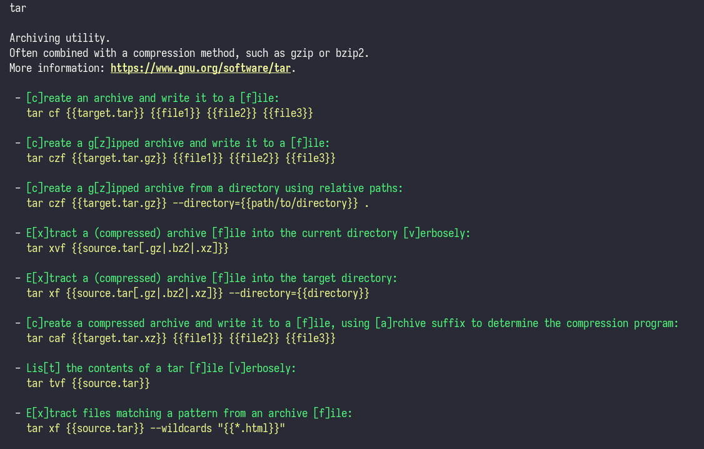
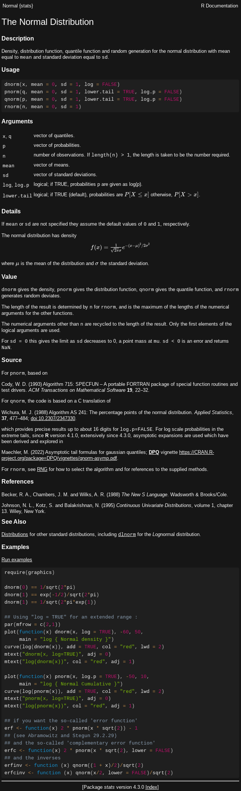
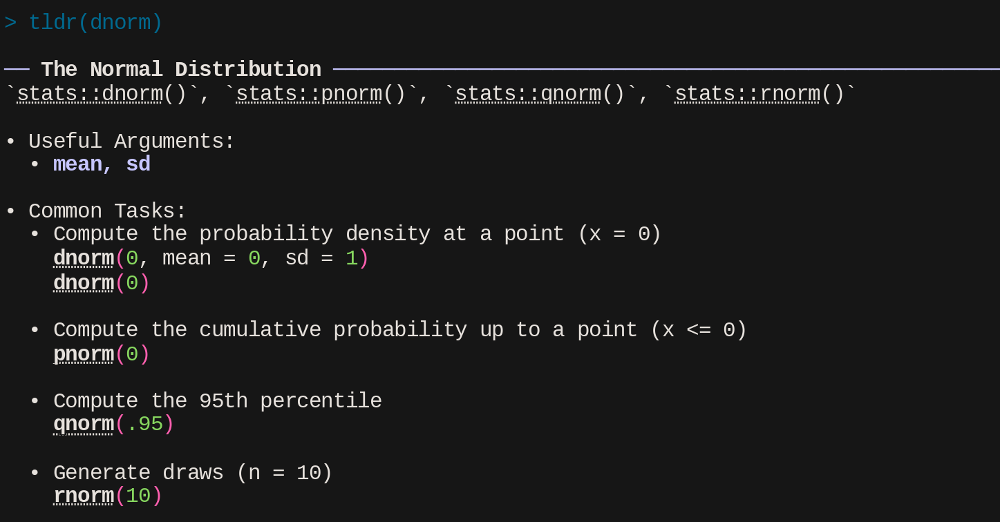
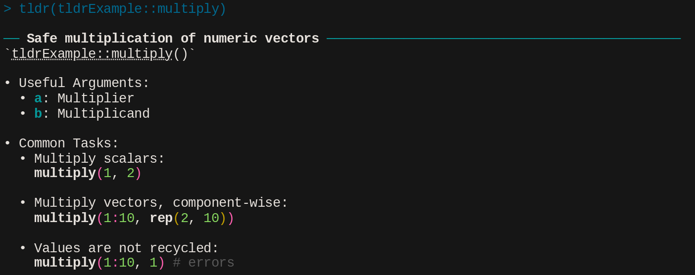
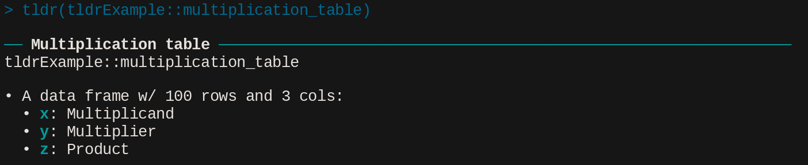

<!DOCTYPE html>
<html lang="en"><head>
<script src="JSM-2023_files/libs/clipboard/clipboard.min.js"></script>
<script src="JSM-2023_files/libs/quarto-html/tabby.min.js"></script>
<script src="JSM-2023_files/libs/quarto-html/popper.min.js"></script>
<script src="JSM-2023_files/libs/quarto-html/tippy.umd.min.js"></script>
<link href="JSM-2023_files/libs/quarto-html/tippy.css" rel="stylesheet">
<link href="JSM-2023_files/libs/quarto-html/quarto-html.min.css" rel="stylesheet" data-mode="light">
<link href="JSM-2023_files/libs/quarto-html/quarto-syntax-highlighting.css" rel="stylesheet" id="quarto-text-highlighting-styles"><meta charset="utf-8">
  <meta name="generator" content="quarto-1.2.269">

  <title>jsm-2023</title>
  <meta name="apple-mobile-web-app-capable" content="yes">
  <meta name="apple-mobile-web-app-status-bar-style" content="black-translucent">
  <meta name="viewport" content="width=device-width, initial-scale=1.0, maximum-scale=1.0, user-scalable=no, minimal-ui">
  <link rel="stylesheet" href="JSM-2023_files/libs/revealjs/dist/reset.css">
  <link rel="stylesheet" href="JSM-2023_files/libs/revealjs/dist/reveal.css">
  <style>
    code{white-space: pre-wrap;}
    span.smallcaps{font-variant: small-caps;}
    div.columns{display: flex; gap: min(4vw, 1.5em);}
    div.column{flex: auto; overflow-x: auto;}
    div.hanging-indent{margin-left: 1.5em; text-indent: -1.5em;}
    ul.task-list{list-style: none;}
    ul.task-list li input[type="checkbox"] {
      width: 0.8em;
      margin: 0 0.8em 0.2em -1.6em;
      vertical-align: middle;
    }
    pre > code.sourceCode { white-space: pre; position: relative; }
    pre > code.sourceCode > span { display: inline-block; line-height: 1.25; }
    pre > code.sourceCode > span:empty { height: 1.2em; }
    .sourceCode { overflow: visible; }
    code.sourceCode > span { color: inherit; text-decoration: inherit; }
    div.sourceCode { margin: 1em 0; }
    pre.sourceCode { margin: 0; }
    @media screen {
    div.sourceCode { overflow: auto; }
    }
    @media print {
    pre > code.sourceCode { white-space: pre-wrap; }
    pre > code.sourceCode > span { text-indent: -5em; padding-left: 5em; }
    }
    pre.numberSource code
      { counter-reset: source-line 0; }
    pre.numberSource code > span
      { position: relative; left: -4em; counter-increment: source-line; }
    pre.numberSource code > span > a:first-child::before
      { content: counter(source-line);
        position: relative; left: -1em; text-align: right; vertical-align: baseline;
        border: none; display: inline-block;
        -webkit-touch-callout: none; -webkit-user-select: none;
        -khtml-user-select: none; -moz-user-select: none;
        -ms-user-select: none; user-select: none;
        padding: 0 4px; width: 4em;
        color: #aaaaaa;
      }
    pre.numberSource { margin-left: 3em; border-left: 1px solid #aaaaaa;  padding-left: 4px; }
    div.sourceCode
      { color: #003b4f; background-color: #f1f3f5; }
    @media screen {
    pre > code.sourceCode > span > a:first-child::before { text-decoration: underline; }
    }
    code span { color: #003b4f; } /* Normal */
    code span.al { color: #ad0000; } /* Alert */
    code span.an { color: #5e5e5e; } /* Annotation */
    code span.at { color: #657422; } /* Attribute */
    code span.bn { color: #ad0000; } /* BaseN */
    code span.bu { } /* BuiltIn */
    code span.cf { color: #003b4f; } /* ControlFlow */
    code span.ch { color: #20794d; } /* Char */
    code span.cn { color: #8f5902; } /* Constant */
    code span.co { color: #5e5e5e; } /* Comment */
    code span.cv { color: #5e5e5e; font-style: italic; } /* CommentVar */
    code span.do { color: #5e5e5e; font-style: italic; } /* Documentation */
    code span.dt { color: #ad0000; } /* DataType */
    code span.dv { color: #ad0000; } /* DecVal */
    code span.er { color: #ad0000; } /* Error */
    code span.ex { } /* Extension */
    code span.fl { color: #ad0000; } /* Float */
    code span.fu { color: #4758ab; } /* Function */
    code span.im { color: #00769e; } /* Import */
    code span.in { color: #5e5e5e; } /* Information */
    code span.kw { color: #003b4f; } /* Keyword */
    code span.op { color: #5e5e5e; } /* Operator */
    code span.ot { color: #003b4f; } /* Other */
    code span.pp { color: #ad0000; } /* Preprocessor */
    code span.sc { color: #5e5e5e; } /* SpecialChar */
    code span.ss { color: #20794d; } /* SpecialString */
    code span.st { color: #20794d; } /* String */
    code span.va { color: #111111; } /* Variable */
    code span.vs { color: #20794d; } /* VerbatimString */
    code span.wa { color: #5e5e5e; font-style: italic; } /* Warning */
    div.csl-bib-body { }
    div.csl-entry {
      clear: both;
    }
    .hanging div.csl-entry {
      margin-left:2em;
      text-indent:-2em;
    }
    div.csl-left-margin {
      min-width:2em;
      float:left;
    }
    div.csl-right-inline {
      margin-left:2em;
      padding-left:1em;
    }
    div.csl-indent {
      margin-left: 2em;
    }
  </style>
  <link rel="stylesheet" href="JSM-2023_files/libs/revealjs/dist/theme/quarto.css" id="theme">
  <link href="JSM-2023_files/libs/revealjs/plugin/quarto-line-highlight/line-highlight.css" rel="stylesheet">
  <link href="JSM-2023_files/libs/revealjs/plugin/reveal-menu/menu.css" rel="stylesheet">
  <link href="JSM-2023_files/libs/revealjs/plugin/reveal-menu/quarto-menu.css" rel="stylesheet">
  <link href="JSM-2023_files/libs/revealjs/plugin/quarto-support/footer.css" rel="stylesheet">
  <style type="text/css">

  .callout {
    margin-top: 1em;
    margin-bottom: 1em;  
    border-radius: .25rem;
  }

  .callout.callout-style-simple { 
    padding: 0em 0.5em;
    border-left: solid #acacac .3rem;
    border-right: solid 1px silver;
    border-top: solid 1px silver;
    border-bottom: solid 1px silver;
    display: flex;
  }

  .callout.callout-style-default {
    border-left: solid #acacac .3rem;
    border-right: solid 1px silver;
    border-top: solid 1px silver;
    border-bottom: solid 1px silver;
  }

  .callout .callout-body-container {
    flex-grow: 1;
  }

  .callout.callout-style-simple .callout-body {
    font-size: 1rem;
    font-weight: 400;
  }

  .callout.callout-style-default .callout-body {
    font-size: 0.9rem;
    font-weight: 400;
  }

  .callout.callout-captioned.callout-style-simple .callout-body {
    margin-top: 0.2em;
  }

  .callout:not(.callout-captioned) .callout-body {
      display: flex;
  }

  .callout:not(.no-icon).callout-captioned.callout-style-simple .callout-content {
    padding-left: 1.6em;
  }

  .callout.callout-captioned .callout-header {
    padding-top: 0.2em;
    margin-bottom: -0.2em;
  }

  .callout.callout-captioned .callout-caption  p {
    margin-top: 0.5em;
    margin-bottom: 0.5em;
  }
    
  .callout.callout-captioned.callout-style-simple .callout-content  p {
    margin-top: 0;
  }

  .callout.callout-captioned.callout-style-default .callout-content  p {
    margin-top: 0.7em;
  }

  .callout.callout-style-simple div.callout-caption {
    border-bottom: none;
    font-size: .9rem;
    font-weight: 600;
    opacity: 75%;
  }

  .callout.callout-style-default  div.callout-caption {
    border-bottom: none;
    font-weight: 600;
    opacity: 85%;
    font-size: 0.9rem;
    padding-left: 0.5em;
    padding-right: 0.5em;
  }

  .callout.callout-style-default div.callout-content {
    padding-left: 0.5em;
    padding-right: 0.5em;
  }

  .callout.callout-style-simple .callout-icon::before {
    height: 1rem;
    width: 1rem;
    display: inline-block;
    content: "";
    background-repeat: no-repeat;
    background-size: 1rem 1rem;
  }

  .callout.callout-style-default .callout-icon::before {
    height: 0.9rem;
    width: 0.9rem;
    display: inline-block;
    content: "";
    background-repeat: no-repeat;
    background-size: 0.9rem 0.9rem;
  }

  .callout-caption {
    display: flex
  }
    
  .callout-icon::before {
    margin-top: 1rem;
    padding-right: .5rem;
  }

  .callout.no-icon::before {
    display: none !important;
  }

  .callout.callout-captioned .callout-body > .callout-content > :last-child {
    margin-bottom: 0.5rem;
  }

  .callout.callout-captioned .callout-icon::before {
    margin-top: .5rem;
    padding-right: .5rem;
  }

  .callout:not(.callout-captioned) .callout-icon::before {
    margin-top: 1rem;
    padding-right: .5rem;
  }

  /* Callout Types */

  div.callout-note {
    border-left-color: #4582ec !important;
  }

  div.callout-note .callout-icon::before {
    background-image: url('');
  }

  div.callout-note.callout-style-default .callout-caption {
    background-color: #dae6fb
  }

  div.callout-important {
    border-left-color: #d9534f !important;
  }

  div.callout-important .callout-icon::before {
    background-image: url('');
  }

  div.callout-important.callout-style-default .callout-caption {
    background-color: #f7dddc
  }

  div.callout-warning {
    border-left-color: #f0ad4e !important;
  }

  div.callout-warning .callout-icon::before {
    background-image: url('');
  }

  div.callout-warning.callout-style-default .callout-caption {
    background-color: #fcefdc
  }

  div.callout-tip {
    border-left-color: #02b875 !important;
  }

  div.callout-tip .callout-icon::before {
    background-image: url('');
  }

  div.callout-tip.callout-style-default .callout-caption {
    background-color: #ccf1e3
  }

  div.callout-caution {
    border-left-color: #fd7e14 !important;
  }

  div.callout-caution .callout-icon::before {
    background-image: url('');
  }

  div.callout-caution.callout-style-default .callout-caption {
    background-color: #ffe5d0
  }

  </style>
  <style type="text/css">
    .reveal div.sourceCode {
      margin: 0;
      overflow: auto;
    }
    .reveal div.hanging-indent {
      margin-left: 1em;
      text-indent: -1em;
    }
    .reveal .slide:not(.center) {
      height: 100%;
    }
    .reveal .slide.scrollable {
      overflow-y: auto;
    }
    .reveal .footnotes {
      height: 100%;
      overflow-y: auto;
    }
    .reveal .slide .absolute {
      position: absolute;
      display: block;
    }
    .reveal .footnotes ol {
      counter-reset: ol;
      list-style-type: none; 
      margin-left: 0;
    }
    .reveal .footnotes ol li:before {
      counter-increment: ol;
      content: counter(ol) ". "; 
    }
    .reveal .footnotes ol li > p:first-child {
      display: inline-block;
    }
    .reveal .slide ul,
    .reveal .slide ol {
      margin-bottom: 0.5em;
    }
    .reveal .slide ul li,
    .reveal .slide ol li {
      margin-top: 0.4em;
      margin-bottom: 0.2em;
    }
    .reveal .slide ul[role="tablist"] li {
      margin-bottom: 0;
    }
    .reveal .slide ul li > *:first-child,
    .reveal .slide ol li > *:first-child {
      margin-block-start: 0;
    }
    .reveal .slide ul li > *:last-child,
    .reveal .slide ol li > *:last-child {
      margin-block-end: 0;
    }
    .reveal .slide .columns:nth-child(3) {
      margin-block-start: 0.8em;
    }
    .reveal blockquote {
      box-shadow: none;
    }
    .reveal .tippy-content>* {
      margin-top: 0.2em;
      margin-bottom: 0.7em;
    }
    .reveal .tippy-content>*:last-child {
      margin-bottom: 0.2em;
    }
    .reveal .slide > img.stretch.quarto-figure-center,
    .reveal .slide > img.r-stretch.quarto-figure-center {
      display: block;
      margin-left: auto;
      margin-right: auto; 
    }
    .reveal .slide > img.stretch.quarto-figure-left,
    .reveal .slide > img.r-stretch.quarto-figure-left  {
      display: block;
      margin-left: 0;
      margin-right: auto; 
    }
    .reveal .slide > img.stretch.quarto-figure-right,
    .reveal .slide > img.r-stretch.quarto-figure-right  {
      display: block;
      margin-left: auto;
      margin-right: 0; 
    }
  </style>
  
  <link href="JSM-2023_files/libs/pagedtable-1.1/css/pagedtable.css" rel="stylesheet">
  <script src="JSM-2023_files/libs/pagedtable-1.1/js/pagedtable.js"></script>
</head>
<body class="quarto-light">
  <div class="reveal">
    <div class="slides">


<section class="slide level2">

<h1>
{tldr}
</h1>
<h2>
Quick Documentation in the R Console
</h2>
<hr>
<h3>
<strong>James Otto</strong> (Alcon Laboratories)
</h3>
<h3>
David Kahle (Baylor University)
</h3>
<h3>
8/8/2023
</h3>
<p></p>
<div class="footer">

</div>
</section>
<section>
<section id="modern-software-documentation" class="title-slide slide level1 center">
<h1>Modern Software Documentation</h1>

</section>
<section id="docs-for-developers-bhatti_docs_2021" class="slide level2">
<h2>Docs for Developers (<span class="citation" data-cites="bhatti_docs_2021">Bhatti <em>et al.</em> (<a href="#/references" role="doc-biblioref" onclick="">2021</a>)</span>)</h2>
<div>
<ul>
<li class="fragment">User base</li>
<li class="fragment">User needs</li>
<li class="fragment">Example selection
<ul>
<li class="fragment">“Explanatory” and “executable”</li>
<li class="fragment">Explained, concise, clear, extensible, and trustworthy</li>
</ul></li>
</ul>
</div>
</section>
<section id="example-forward-documentation" class="slide level2">
<h2>Example Forward Documentation</h2>
<div>
<ul>
<li class="fragment">Analysis of StackOverflow answers (<span class="citation" data-cites="nasehi_what_2012">Nasehi <em>et al.</em> (<a href="#/references" role="doc-biblioref" onclick="">2012</a>)</span>) identified nine traits of “recognized” answers:
<ul>
<li class="fragment">Concise code samples</li>
<li class="fragment">Inline documentation</li>
<li class="fragment">Multiple solutions</li>
<li class="fragment">Links to extra resources</li>
</ul></li>
</ul>
</div>
</section></section>
<section>
<section id="tldr-pages" class="title-slide slide level1 center">
<h1><code>tldr-pages</code></h1>

</section>
<section id="tldr-pages-1" class="slide level2">
<h2><code>tldr-pages</code></h2>

<div style="font-size: 70%; text-align: center;">
<p><a href="https://xkcd.com/1168/">xkcd.com/1168/</a></p>
</div>
</section>
<section id="tldr-pages-2" class="slide level2">
<h2><code>tldr-pages</code></h2>
<div style="font-size: 60%">
<p><code>&gt; man tar</code></p>
</div>
<div class="fragment">
<div class="sourceCode" id="cb1"><pre class="sourceCode numberSource default number-lines code-with-copy"><code class="sourceCode default"><span id="cb1-1"><a href="#cb1-1"></a>TAR(1)                       GNU TAR Manual                       TAR(1)</span>
<span id="cb1-2"><a href="#cb1-2"></a>NAME</span>
<span id="cb1-3"><a href="#cb1-3"></a>       tar - an archiving utility</span>
<span id="cb1-4"><a href="#cb1-4"></a>SYNOPSIS</span>
<span id="cb1-5"><a href="#cb1-5"></a>   Traditional usage</span>
<span id="cb1-6"><a href="#cb1-6"></a>       tar {A|c|d|r|t|u|x}[GnSkUWOmpsMBiajJzZhPlRvwo] [ARG...]</span>
<span id="cb1-7"><a href="#cb1-7"></a></span>
<span id="cb1-8"><a href="#cb1-8"></a>   UNIX-style usage</span>
<span id="cb1-9"><a href="#cb1-9"></a>       tar -A [OPTIONS] -f ARCHIVE ARCHIVE</span>
<span id="cb1-10"><a href="#cb1-10"></a></span>
<span id="cb1-11"><a href="#cb1-11"></a>       tar -c [-f ARCHIVE] [OPTIONS] [FILE...]</span>
<span id="cb1-12"><a href="#cb1-12"></a></span>
<span id="cb1-13"><a href="#cb1-13"></a>       tar -d [-f ARCHIVE] [OPTIONS] [FILE...]</span>
<span id="cb1-14"><a href="#cb1-14"></a></span>
<span id="cb1-15"><a href="#cb1-15"></a>       tar -r [-f ARCHIVE] [OPTIONS] [FILE...]</span>
<span id="cb1-16"><a href="#cb1-16"></a></span>
<span id="cb1-17"><a href="#cb1-17"></a>       tar -t [-f ARCHIVE] [OPTIONS] [MEMBER...]</span>
<span id="cb1-18"><a href="#cb1-18"></a></span>
<span id="cb1-19"><a href="#cb1-19"></a>       tar -u [-f ARCHIVE] [OPTIONS] [FILE...]</span>
<span id="cb1-20"><a href="#cb1-20"></a></span>
<span id="cb1-21"><a href="#cb1-21"></a>       tar -x [-f ARCHIVE] [OPTIONS] [MEMBER...]</span>
<span id="cb1-22"><a href="#cb1-22"></a></span>
<span id="cb1-23"><a href="#cb1-23"></a>   GNU-style usage</span>
<span id="cb1-24"><a href="#cb1-24"></a>       tar {--catenate|--concatenate} [OPTIONS] --file ARCHIVE ARCHIVE</span>
<span id="cb1-25"><a href="#cb1-25"></a></span>
<span id="cb1-26"><a href="#cb1-26"></a>       tar --create [--file ARCHIVE] [OPTIONS] [FILE...]</span>
<span id="cb1-27"><a href="#cb1-27"></a></span>
<span id="cb1-28"><a href="#cb1-28"></a>       tar {--diff|--compare} [--file ARCHIVE] [OPTIONS] [FILE...]</span>
<span id="cb1-29"><a href="#cb1-29"></a></span>
<span id="cb1-30"><a href="#cb1-30"></a>       tar --delete [--file ARCHIVE] [OPTIONS] [MEMBER...]</span>
<span id="cb1-31"><a href="#cb1-31"></a></span>
<span id="cb1-32"><a href="#cb1-32"></a>       tar --append [--file ARCHIVE] [OPTIONS] [FILE...]</span>
<span id="cb1-33"><a href="#cb1-33"></a></span>
<span id="cb1-34"><a href="#cb1-34"></a>       tar --list [--file ARCHIVE] [OPTIONS] [MEMBER...]</span>
<span id="cb1-35"><a href="#cb1-35"></a></span>
<span id="cb1-36"><a href="#cb1-36"></a>       tar --test-label [--file ARCHIVE] [OPTIONS] [LABEL...]</span>
<span id="cb1-37"><a href="#cb1-37"></a></span>
<span id="cb1-38"><a href="#cb1-38"></a>       tar --update [--file ARCHIVE] [OPTIONS] [FILE...]</span>
<span id="cb1-39"><a href="#cb1-39"></a></span>
<span id="cb1-40"><a href="#cb1-40"></a>       tar {--extract|--get} [--file ARCHIVE] [OPTIONS] [MEMBER...]</span>
<span id="cb1-41"><a href="#cb1-41"></a>NOTE</span>
<span id="cb1-42"><a href="#cb1-42"></a>       This manpage is a short description of GNU tar.  For a detailed</span>
<span id="cb1-43"><a href="#cb1-43"></a>       discussion, including examples and usage recommendations, refer</span>
<span id="cb1-44"><a href="#cb1-44"></a>       to the GNU Tar Manual available in texinfo format.  If the info</span>
<span id="cb1-45"><a href="#cb1-45"></a>       reader and the tar documentation are properly installed on your</span>
<span id="cb1-46"><a href="#cb1-46"></a>       system, the command</span>
<span id="cb1-47"><a href="#cb1-47"></a></span>
<span id="cb1-48"><a href="#cb1-48"></a>           info tar</span>
<span id="cb1-49"><a href="#cb1-49"></a></span>
<span id="cb1-50"><a href="#cb1-50"></a>       should give you access to the complete manual.</span>
<span id="cb1-51"><a href="#cb1-51"></a></span>
<span id="cb1-52"><a href="#cb1-52"></a>       You can also view the manual using the info mode in emacs(1), or</span>
<span id="cb1-53"><a href="#cb1-53"></a>       find it in various formats online at</span>
<span id="cb1-54"><a href="#cb1-54"></a></span>
<span id="cb1-55"><a href="#cb1-55"></a>           http://www.gnu.org/software/tar/manual</span>
<span id="cb1-56"><a href="#cb1-56"></a></span>
<span id="cb1-57"><a href="#cb1-57"></a>       If any discrepancies occur between this manpage and the GNU Tar</span>
<span id="cb1-58"><a href="#cb1-58"></a>       Manual, the later shall be considered the authoritative source.</span>
<span id="cb1-59"><a href="#cb1-59"></a>DESCRIPTION</span>
<span id="cb1-60"><a href="#cb1-60"></a>       GNU tar is an archiving program designed to store multiple files</span>
<span id="cb1-61"><a href="#cb1-61"></a>       in a single file (an archive), and to manipulate such archives.</span>
<span id="cb1-62"><a href="#cb1-62"></a>       The archive can be either a regular file or a device (e.g. a tape</span>
<span id="cb1-63"><a href="#cb1-63"></a>       drive, hence the name of the program, which stands for tape</span>
<span id="cb1-64"><a href="#cb1-64"></a>       archiver), which can be located either on the local or on a</span>
<span id="cb1-65"><a href="#cb1-65"></a>       remote machine.</span>
<span id="cb1-66"><a href="#cb1-66"></a></span>
<span id="cb1-67"><a href="#cb1-67"></a>   Option styles</span>
<span id="cb1-68"><a href="#cb1-68"></a>       Options to GNU tar can be given in three different styles.  In</span>
<span id="cb1-69"><a href="#cb1-69"></a>       traditional style, the first argument is a cluster of option</span>
<span id="cb1-70"><a href="#cb1-70"></a>       letters and all subsequent arguments supply arguments to those</span>
<span id="cb1-71"><a href="#cb1-71"></a>       options that require them.  The arguments are read in the same</span>
<span id="cb1-72"><a href="#cb1-72"></a>       order as the option letters.  Any command line words that remain</span>
<span id="cb1-73"><a href="#cb1-73"></a>       after all options has been processed are treated as non-optional</span>
<span id="cb1-74"><a href="#cb1-74"></a>       arguments: file or archive member names.</span>
<span id="cb1-75"><a href="#cb1-75"></a></span>
<span id="cb1-76"><a href="#cb1-76"></a>       For example, the c option requires creating the archive, the v</span>
<span id="cb1-77"><a href="#cb1-77"></a>       option requests the verbose operation, and the f option takes an</span>
<span id="cb1-78"><a href="#cb1-78"></a>       argument that sets the name of the archive to operate upon.  The</span>
<span id="cb1-79"><a href="#cb1-79"></a>       following command, written in the traditional style, instructs</span>
<span id="cb1-80"><a href="#cb1-80"></a>       tar to store all files from the directory /etc into the archive</span>
<span id="cb1-81"><a href="#cb1-81"></a>       file etc.tar verbosely listing the files being archived:</span>
<span id="cb1-82"><a href="#cb1-82"></a></span>
<span id="cb1-83"><a href="#cb1-83"></a>       tar cfv etc.tar /etc</span>
<span id="cb1-84"><a href="#cb1-84"></a></span>
<span id="cb1-85"><a href="#cb1-85"></a>       In UNIX or short-option style, each option letter is prefixed</span>
<span id="cb1-86"><a href="#cb1-86"></a>       with a single dash, as in other command line utilities.  If an</span>
<span id="cb1-87"><a href="#cb1-87"></a>       option takes argument, the argument follows it, either as a</span>
<span id="cb1-88"><a href="#cb1-88"></a>       separate command line word, or immediately following the option.</span>
<span id="cb1-89"><a href="#cb1-89"></a>       However, if the option takes an optional argument, the argument</span>
<span id="cb1-90"><a href="#cb1-90"></a>       must follow the option letter without any intervening whitespace,</span>
<span id="cb1-91"><a href="#cb1-91"></a>       as in -g/tmp/snar.db.</span>
<span id="cb1-92"><a href="#cb1-92"></a></span>
<span id="cb1-93"><a href="#cb1-93"></a>       Any number of options not taking arguments can be clustered</span>
<span id="cb1-94"><a href="#cb1-94"></a>       together after a single dash, e.g. -vkp.  Options that take</span>
<span id="cb1-95"><a href="#cb1-95"></a>       arguments (whether mandatory or optional), can appear at the end</span>
<span id="cb1-96"><a href="#cb1-96"></a>       of such a cluster, e.g. -vkpf a.tar.</span>
<span id="cb1-97"><a href="#cb1-97"></a></span>
<span id="cb1-98"><a href="#cb1-98"></a>       The example command above written in the short-option style could</span>
<span id="cb1-99"><a href="#cb1-99"></a>       look like:</span>
<span id="cb1-100"><a href="#cb1-100"></a></span>
<span id="cb1-101"><a href="#cb1-101"></a>       tar -cvf etc.tar /etc</span>
<span id="cb1-102"><a href="#cb1-102"></a>       or</span>
<span id="cb1-103"><a href="#cb1-103"></a>       tar -c -v -f etc.tar /etc</span>
<span id="cb1-104"><a href="#cb1-104"></a></span>
<span id="cb1-105"><a href="#cb1-105"></a>       In GNU or long-option style, each option begins with two dashes</span>
<span id="cb1-106"><a href="#cb1-106"></a>       and has a meaningful name, consisting of lower-case letters and</span>
<span id="cb1-107"><a href="#cb1-107"></a>       dashes.  When used, the long option can be abbreviated to its</span>
<span id="cb1-108"><a href="#cb1-108"></a>       initial letters, provided that this does not create ambiguity.</span>
<span id="cb1-109"><a href="#cb1-109"></a>       Arguments to long options are supplied either as a separate</span>
<span id="cb1-110"><a href="#cb1-110"></a>       command line word, immediately following the option, or separated</span>
<span id="cb1-111"><a href="#cb1-111"></a>       from the option by an equals sign with no intervening whitespace.</span>
<span id="cb1-112"><a href="#cb1-112"></a>       Optional arguments must always use the latter method.</span>
<span id="cb1-113"><a href="#cb1-113"></a></span>
<span id="cb1-114"><a href="#cb1-114"></a>       Here are several ways of writing the example command in this</span>
<span id="cb1-115"><a href="#cb1-115"></a>       style:</span>
<span id="cb1-116"><a href="#cb1-116"></a></span>
<span id="cb1-117"><a href="#cb1-117"></a>       tar --create --file etc.tar --verbose /etc</span>
<span id="cb1-118"><a href="#cb1-118"></a>       or (abbreviating some options):</span>
<span id="cb1-119"><a href="#cb1-119"></a>       tar --cre --file=etc.tar --verb /etc</span>
<span id="cb1-120"><a href="#cb1-120"></a></span>
<span id="cb1-121"><a href="#cb1-121"></a>       The options in all three styles can be intermixed, although doing</span>
<span id="cb1-122"><a href="#cb1-122"></a>       so with old options is not encouraged.</span>
<span id="cb1-123"><a href="#cb1-123"></a></span>
<span id="cb1-124"><a href="#cb1-124"></a>   Operation mode</span>
<span id="cb1-125"><a href="#cb1-125"></a>       The options listed in the table below tell GNU tar what operation</span>
<span id="cb1-126"><a href="#cb1-126"></a>       it is to perform.  Exactly one of them must be given.  Meaning of</span>
<span id="cb1-127"><a href="#cb1-127"></a>       non-optional arguments depends on the operation mode requested.</span>
<span id="cb1-128"><a href="#cb1-128"></a></span>
<span id="cb1-129"><a href="#cb1-129"></a>       -A, --catenate, --concatenate</span>
<span id="cb1-130"><a href="#cb1-130"></a>              Append archive to the end of another archive.  The</span>
<span id="cb1-131"><a href="#cb1-131"></a>              arguments are treated as the names of archives to append.</span>
<span id="cb1-132"><a href="#cb1-132"></a>              All archives must be of the same format as the archive</span>
<span id="cb1-133"><a href="#cb1-133"></a>              they are appended to, otherwise the resulting archive</span>
<span id="cb1-134"><a href="#cb1-134"></a>              might be unusable with non-GNU implementations of tar.</span>
<span id="cb1-135"><a href="#cb1-135"></a>              Notice also that when more than one archive is given, the</span>
<span id="cb1-136"><a href="#cb1-136"></a>              members from archives other than the first one will be</span>
<span id="cb1-137"><a href="#cb1-137"></a>              accessible in the resulting archive only if using the -i</span>
<span id="cb1-138"><a href="#cb1-138"></a>              (--ignore-zeros) option.</span>
<span id="cb1-139"><a href="#cb1-139"></a></span>
<span id="cb1-140"><a href="#cb1-140"></a>              Compressed archives cannot be concatenated.</span>
<span id="cb1-141"><a href="#cb1-141"></a></span>
<span id="cb1-142"><a href="#cb1-142"></a>       -c, --create</span>
<span id="cb1-143"><a href="#cb1-143"></a>              Create a new archive.  Arguments supply the names of the</span>
<span id="cb1-144"><a href="#cb1-144"></a>              files to be archived.  Directories are archived</span>
<span id="cb1-145"><a href="#cb1-145"></a>              recursively, unless the --no-recursion option is given.</span>
<span id="cb1-146"><a href="#cb1-146"></a></span>
<span id="cb1-147"><a href="#cb1-147"></a>       -d, --diff, --compare</span>
<span id="cb1-148"><a href="#cb1-148"></a>              Find differences between archive and file system.  The</span>
<span id="cb1-149"><a href="#cb1-149"></a>              arguments are optional and specify archive members to</span>
<span id="cb1-150"><a href="#cb1-150"></a>              compare.  If not given, the current working directory is</span>
<span id="cb1-151"><a href="#cb1-151"></a>              assumed.</span>
<span id="cb1-152"><a href="#cb1-152"></a></span>
<span id="cb1-153"><a href="#cb1-153"></a>       --delete</span>
<span id="cb1-154"><a href="#cb1-154"></a>              Delete from the archive.  The arguments supply names of</span>
<span id="cb1-155"><a href="#cb1-155"></a>              the archive members to be removed.  At least one argument</span>
<span id="cb1-156"><a href="#cb1-156"></a>              must be given.</span>
<span id="cb1-157"><a href="#cb1-157"></a></span>
<span id="cb1-158"><a href="#cb1-158"></a>              This option does not operate on compressed archives.</span>
<span id="cb1-159"><a href="#cb1-159"></a>              There is no short option equivalent.</span>
<span id="cb1-160"><a href="#cb1-160"></a></span>
<span id="cb1-161"><a href="#cb1-161"></a>       -r, --append</span>
<span id="cb1-162"><a href="#cb1-162"></a>              Append files to the end of an archive.  Arguments have the</span>
<span id="cb1-163"><a href="#cb1-163"></a>              same meaning as for -c (--create).</span>
<span id="cb1-164"><a href="#cb1-164"></a></span>
<span id="cb1-165"><a href="#cb1-165"></a>       -t, --list</span>
<span id="cb1-166"><a href="#cb1-166"></a>              List the contents of an archive.  Arguments are optional.</span>
<span id="cb1-167"><a href="#cb1-167"></a>              When given, they specify the names of the members to list.</span>
<span id="cb1-168"><a href="#cb1-168"></a></span>
<span id="cb1-169"><a href="#cb1-169"></a>       --test-label</span>
<span id="cb1-170"><a href="#cb1-170"></a>              Test the archive volume label and exit.  When used without</span>
<span id="cb1-171"><a href="#cb1-171"></a>              arguments, it prints the volume label (if any) and exits</span>
<span id="cb1-172"><a href="#cb1-172"></a>              with status 0.  When one or more command line arguments</span>
<span id="cb1-173"><a href="#cb1-173"></a>              are given.  tar compares the volume label with each</span>
<span id="cb1-174"><a href="#cb1-174"></a>              argument.  It exits with code 0 if a match is found, and</span>
<span id="cb1-175"><a href="#cb1-175"></a>              with code 1 otherwise.  No output is displayed, unless</span>
<span id="cb1-176"><a href="#cb1-176"></a>              used together with the -v (--verbose) option.</span>
<span id="cb1-177"><a href="#cb1-177"></a></span>
<span id="cb1-178"><a href="#cb1-178"></a>              There is no short option equivalent for this option.</span>
<span id="cb1-179"><a href="#cb1-179"></a></span>
<span id="cb1-180"><a href="#cb1-180"></a>       -u, --update</span>
<span id="cb1-181"><a href="#cb1-181"></a>              Append files which are newer than the corresponding copy</span>
<span id="cb1-182"><a href="#cb1-182"></a>              in the archive.  Arguments have the same meaning as with</span>
<span id="cb1-183"><a href="#cb1-183"></a>              -c and -r options.  Notice, that newer files don't replace</span>
<span id="cb1-184"><a href="#cb1-184"></a>              their old archive copies, but instead are appended to the</span>
<span id="cb1-185"><a href="#cb1-185"></a>              end of archive.  The resulting archive can thus contain</span>
<span id="cb1-186"><a href="#cb1-186"></a>              several members of the same name, corresponding to various</span>
<span id="cb1-187"><a href="#cb1-187"></a>              versions of the same file.</span>
<span id="cb1-188"><a href="#cb1-188"></a></span>
<span id="cb1-189"><a href="#cb1-189"></a>       -x, --extract, --get</span>
<span id="cb1-190"><a href="#cb1-190"></a>              Extract files from an archive.  Arguments are optional.</span>
<span id="cb1-191"><a href="#cb1-191"></a>              When given, they specify names of the archive members to</span>
<span id="cb1-192"><a href="#cb1-192"></a>              be extracted.</span>
<span id="cb1-193"><a href="#cb1-193"></a></span>
<span id="cb1-194"><a href="#cb1-194"></a>       --show-defaults</span>
<span id="cb1-195"><a href="#cb1-195"></a>              Show built-in defaults for various tar options and exit.</span>
<span id="cb1-196"><a href="#cb1-196"></a>              No arguments are allowed.</span>
<span id="cb1-197"><a href="#cb1-197"></a></span>
<span id="cb1-198"><a href="#cb1-198"></a>       -?, --help</span>
<span id="cb1-199"><a href="#cb1-199"></a>              Display a short option summary and exit.  No arguments</span>
<span id="cb1-200"><a href="#cb1-200"></a>              allowed.</span>
<span id="cb1-201"><a href="#cb1-201"></a></span>
<span id="cb1-202"><a href="#cb1-202"></a>       --usage</span>
<span id="cb1-203"><a href="#cb1-203"></a>              Display a list of available options and exit.  No</span>
<span id="cb1-204"><a href="#cb1-204"></a>              arguments allowed.</span>
<span id="cb1-205"><a href="#cb1-205"></a></span>
<span id="cb1-206"><a href="#cb1-206"></a>       --version</span>
<span id="cb1-207"><a href="#cb1-207"></a>              Print program version and copyright information and exit.</span>
<span id="cb1-208"><a href="#cb1-208"></a>OPTIONS</span>
<span id="cb1-209"><a href="#cb1-209"></a>   Operation modifiers</span>
<span id="cb1-210"><a href="#cb1-210"></a>       --check-device</span>
<span id="cb1-211"><a href="#cb1-211"></a>              Check device numbers when creating incremental archives</span>
<span id="cb1-212"><a href="#cb1-212"></a>              (default).</span>
<span id="cb1-213"><a href="#cb1-213"></a></span>
<span id="cb1-214"><a href="#cb1-214"></a>       -g, --listed-incremental=FILE</span>
<span id="cb1-215"><a href="#cb1-215"></a>              Handle new GNU-format incremental backups.  FILE is the</span>
<span id="cb1-216"><a href="#cb1-216"></a>              name of a snapshot file, where tar stores additional</span>
<span id="cb1-217"><a href="#cb1-217"></a>              information which is used to decide which files changed</span>
<span id="cb1-218"><a href="#cb1-218"></a>              since the previous incremental dump and, consequently,</span>
<span id="cb1-219"><a href="#cb1-219"></a>              must be dumped again.  If FILE does not exist when</span>
<span id="cb1-220"><a href="#cb1-220"></a>              creating an archive, it will be created and all files will</span>
<span id="cb1-221"><a href="#cb1-221"></a>              be added to the resulting archive (the level 0 dump).  To</span>
<span id="cb1-222"><a href="#cb1-222"></a>              create incremental archives of non-zero level N, create a</span>
<span id="cb1-223"><a href="#cb1-223"></a>              copy of the snapshot file created during the level N-1,</span>
<span id="cb1-224"><a href="#cb1-224"></a>              and use it as FILE.</span>
<span id="cb1-225"><a href="#cb1-225"></a></span>
<span id="cb1-226"><a href="#cb1-226"></a>              When listing or extracting, the actual contents of FILE is</span>
<span id="cb1-227"><a href="#cb1-227"></a>              not inspected, it is needed only due to syntactical</span>
<span id="cb1-228"><a href="#cb1-228"></a>              requirements.  It is therefore common practice to use</span>
<span id="cb1-229"><a href="#cb1-229"></a>              /dev/null in its place.</span>
<span id="cb1-230"><a href="#cb1-230"></a></span>
<span id="cb1-231"><a href="#cb1-231"></a>       --hole-detection=METHOD</span>
<span id="cb1-232"><a href="#cb1-232"></a>              Use METHOD to detect holes in sparse files.  This option</span>
<span id="cb1-233"><a href="#cb1-233"></a>              implies --sparse.  Valid values for METHOD are seek and</span>
<span id="cb1-234"><a href="#cb1-234"></a>              raw.  Default is seek with fallback to raw when not</span>
<span id="cb1-235"><a href="#cb1-235"></a>              applicable.</span>
<span id="cb1-236"><a href="#cb1-236"></a></span>
<span id="cb1-237"><a href="#cb1-237"></a>       -G, --incremental</span>
<span id="cb1-238"><a href="#cb1-238"></a>              Handle old GNU-format incremental backups.</span>
<span id="cb1-239"><a href="#cb1-239"></a></span>
<span id="cb1-240"><a href="#cb1-240"></a>       --ignore-failed-read</span>
<span id="cb1-241"><a href="#cb1-241"></a>              Do not exit with nonzero on unreadable files.</span>
<span id="cb1-242"><a href="#cb1-242"></a></span>
<span id="cb1-243"><a href="#cb1-243"></a>       --level=NUMBER</span>
<span id="cb1-244"><a href="#cb1-244"></a>              Set dump level for created listed-incremental archive.</span>
<span id="cb1-245"><a href="#cb1-245"></a>              Currently only --level=0 is meaningful: it instructs tar</span>
<span id="cb1-246"><a href="#cb1-246"></a>              to truncate the snapshot file before dumping, thereby</span>
<span id="cb1-247"><a href="#cb1-247"></a>              forcing a level 0 dump.</span>
<span id="cb1-248"><a href="#cb1-248"></a></span>
<span id="cb1-249"><a href="#cb1-249"></a>       -n, --seek</span>
<span id="cb1-250"><a href="#cb1-250"></a>              Assume the archive is seekable.  Normally tar determines</span>
<span id="cb1-251"><a href="#cb1-251"></a>              automatically whether the archive can be seeked or not.</span>
<span id="cb1-252"><a href="#cb1-252"></a>              This option is intended for use in cases when such</span>
<span id="cb1-253"><a href="#cb1-253"></a>              recognition fails.  It takes effect only if the archive is</span>
<span id="cb1-254"><a href="#cb1-254"></a>              open for reading (e.g. with --list or --extract options).</span>
<span id="cb1-255"><a href="#cb1-255"></a></span>
<span id="cb1-256"><a href="#cb1-256"></a>       --no-check-device</span>
<span id="cb1-257"><a href="#cb1-257"></a>              Do not check device numbers when creating incremental</span>
<span id="cb1-258"><a href="#cb1-258"></a>              archives.</span>
<span id="cb1-259"><a href="#cb1-259"></a></span>
<span id="cb1-260"><a href="#cb1-260"></a>       --no-seek</span>
<span id="cb1-261"><a href="#cb1-261"></a>              Assume the archive is not seekable.</span>
<span id="cb1-262"><a href="#cb1-262"></a></span>
<span id="cb1-263"><a href="#cb1-263"></a>       --occurrence[=N]</span>
<span id="cb1-264"><a href="#cb1-264"></a>              Process only the Nth occurrence of each file in the</span>
<span id="cb1-265"><a href="#cb1-265"></a>              archive.  This option is valid only when used with one of</span>
<span id="cb1-266"><a href="#cb1-266"></a>              the following subcommands: --delete, --diff, --extract or</span>
<span id="cb1-267"><a href="#cb1-267"></a>              --list and when a list of files is given either on the</span>
<span id="cb1-268"><a href="#cb1-268"></a>              command line or via the -T option.  The default N is 1.</span>
<span id="cb1-269"><a href="#cb1-269"></a></span>
<span id="cb1-270"><a href="#cb1-270"></a>       --restrict</span>
<span id="cb1-271"><a href="#cb1-271"></a>              Disable the use of some potentially harmful options.</span>
<span id="cb1-272"><a href="#cb1-272"></a></span>
<span id="cb1-273"><a href="#cb1-273"></a>       --sparse-version=MAJOR[.MINOR]</span>
<span id="cb1-274"><a href="#cb1-274"></a>              Set version of the sparse format to use (implies</span>
<span id="cb1-275"><a href="#cb1-275"></a>              --sparse).  This option implies --sparse.  Valid argument</span>
<span id="cb1-276"><a href="#cb1-276"></a>              values are 0.0, 0.1, and 1.0.  For a detailed discussion</span>
<span id="cb1-277"><a href="#cb1-277"></a>              of sparse formats, refer to the GNU Tar Manual, appendix</span>
<span id="cb1-278"><a href="#cb1-278"></a>              D, "Sparse Formats".  Using info reader, it can be</span>
<span id="cb1-279"><a href="#cb1-279"></a>              accessed running the following command: info tar 'Sparse</span>
<span id="cb1-280"><a href="#cb1-280"></a>              Formats'.</span>
<span id="cb1-281"><a href="#cb1-281"></a></span>
<span id="cb1-282"><a href="#cb1-282"></a>       -S, --sparse</span>
<span id="cb1-283"><a href="#cb1-283"></a>              Handle sparse files efficiently.  Some files in the file</span>
<span id="cb1-284"><a href="#cb1-284"></a>              system may have segments which were actually never written</span>
<span id="cb1-285"><a href="#cb1-285"></a>              (quite often these are database files created by such</span>
<span id="cb1-286"><a href="#cb1-286"></a>              systems as DBM).  When given this option, tar attempts to</span>
<span id="cb1-287"><a href="#cb1-287"></a>              determine if the file is sparse prior to archiving it, and</span>
<span id="cb1-288"><a href="#cb1-288"></a>              if so, to reduce the resulting archive size by not dumping</span>
<span id="cb1-289"><a href="#cb1-289"></a>              empty parts of the file.</span>
<span id="cb1-290"><a href="#cb1-290"></a></span>
<span id="cb1-291"><a href="#cb1-291"></a>   Overwrite control</span>
<span id="cb1-292"><a href="#cb1-292"></a>       These options control tar actions when extracting a file over an</span>
<span id="cb1-293"><a href="#cb1-293"></a>       existing copy on disk.</span>
<span id="cb1-294"><a href="#cb1-294"></a></span>
<span id="cb1-295"><a href="#cb1-295"></a>       -k, --keep-old-files</span>
<span id="cb1-296"><a href="#cb1-296"></a>              Don't replace existing files when extracting.</span>
<span id="cb1-297"><a href="#cb1-297"></a></span>
<span id="cb1-298"><a href="#cb1-298"></a>       --keep-newer-files</span>
<span id="cb1-299"><a href="#cb1-299"></a>              Don't replace existing files that are newer than their</span>
<span id="cb1-300"><a href="#cb1-300"></a>              archive copies.</span>
<span id="cb1-301"><a href="#cb1-301"></a></span>
<span id="cb1-302"><a href="#cb1-302"></a>       --keep-directory-symlink</span>
<span id="cb1-303"><a href="#cb1-303"></a>              Don't replace existing symlinks to directories when</span>
<span id="cb1-304"><a href="#cb1-304"></a>              extracting.</span>
<span id="cb1-305"><a href="#cb1-305"></a></span>
<span id="cb1-306"><a href="#cb1-306"></a>       --no-overwrite-dir</span>
<span id="cb1-307"><a href="#cb1-307"></a>              Preserve metadata of existing directories.</span>
<span id="cb1-308"><a href="#cb1-308"></a></span>
<span id="cb1-309"><a href="#cb1-309"></a>       --one-top-level[=DIR]</span>
<span id="cb1-310"><a href="#cb1-310"></a>              Extract all files into DIR, or, if used without argument,</span>
<span id="cb1-311"><a href="#cb1-311"></a>              into a subdirectory named by the base name of the archive</span>
<span id="cb1-312"><a href="#cb1-312"></a>              (minus standard compression suffixes recognizable by</span>
<span id="cb1-313"><a href="#cb1-313"></a>              --auto-compress).</span>
<span id="cb1-314"><a href="#cb1-314"></a></span>
<span id="cb1-315"><a href="#cb1-315"></a>       --overwrite</span>
<span id="cb1-316"><a href="#cb1-316"></a>              Overwrite existing files when extracting.</span>
<span id="cb1-317"><a href="#cb1-317"></a></span>
<span id="cb1-318"><a href="#cb1-318"></a>       --overwrite-dir</span>
<span id="cb1-319"><a href="#cb1-319"></a>              Overwrite metadata of existing directories when extracting</span>
<span id="cb1-320"><a href="#cb1-320"></a>              (default).</span>
<span id="cb1-321"><a href="#cb1-321"></a></span>
<span id="cb1-322"><a href="#cb1-322"></a>       --recursive-unlink</span>
<span id="cb1-323"><a href="#cb1-323"></a>              Recursively remove all files in the directory prior to</span>
<span id="cb1-324"><a href="#cb1-324"></a>              extracting it.</span>
<span id="cb1-325"><a href="#cb1-325"></a></span>
<span id="cb1-326"><a href="#cb1-326"></a>       --remove-files</span>
<span id="cb1-327"><a href="#cb1-327"></a>              Remove files from disk after adding them to the archive.</span>
<span id="cb1-328"><a href="#cb1-328"></a></span>
<span id="cb1-329"><a href="#cb1-329"></a>       --skip-old-files</span>
<span id="cb1-330"><a href="#cb1-330"></a>              Don't replace existing files when extracting, silently</span>
<span id="cb1-331"><a href="#cb1-331"></a>              skip over them.</span>
<span id="cb1-332"><a href="#cb1-332"></a></span>
<span id="cb1-333"><a href="#cb1-333"></a>       -U, --unlink-first</span>
<span id="cb1-334"><a href="#cb1-334"></a>              Remove each file prior to extracting over it.</span>
<span id="cb1-335"><a href="#cb1-335"></a></span>
<span id="cb1-336"><a href="#cb1-336"></a>       -W, --verify</span>
<span id="cb1-337"><a href="#cb1-337"></a>              Verify the archive after writing it.</span>
<span id="cb1-338"><a href="#cb1-338"></a></span>
<span id="cb1-339"><a href="#cb1-339"></a>   Output stream selection</span>
<span id="cb1-340"><a href="#cb1-340"></a>       --ignore-command-error</span>
<span id="cb1-341"><a href="#cb1-341"></a></span>
<span id="cb1-342"><a href="#cb1-342"></a>       Ignore subprocess exit codes.</span>
<span id="cb1-343"><a href="#cb1-343"></a></span>
<span id="cb1-344"><a href="#cb1-344"></a>       --no-ignore-command-error</span>
<span id="cb1-345"><a href="#cb1-345"></a>              Treat non-zero exit codes of children as error (default).</span>
<span id="cb1-346"><a href="#cb1-346"></a></span>
<span id="cb1-347"><a href="#cb1-347"></a>       -O, --to-stdout</span>
<span id="cb1-348"><a href="#cb1-348"></a>              Extract files to standard output.</span>
<span id="cb1-349"><a href="#cb1-349"></a></span>
<span id="cb1-350"><a href="#cb1-350"></a>       --to-command=COMMAND</span>
<span id="cb1-351"><a href="#cb1-351"></a>              Pipe extracted files to COMMAND.  The argument is the</span>
<span id="cb1-352"><a href="#cb1-352"></a>              pathname of an external program, optionally with command</span>
<span id="cb1-353"><a href="#cb1-353"></a>              line arguments.  The program will be invoked and the</span>
<span id="cb1-354"><a href="#cb1-354"></a>              contents of the file being extracted supplied to it on its</span>
<span id="cb1-355"><a href="#cb1-355"></a>              standard input.  Additional data will be supplied via the</span>
<span id="cb1-356"><a href="#cb1-356"></a>              following environment variables:</span>
<span id="cb1-357"><a href="#cb1-357"></a></span>
<span id="cb1-358"><a href="#cb1-358"></a>              TAR_FILETYPE</span>
<span id="cb1-359"><a href="#cb1-359"></a>                     Type of the file. It is a single letter with the</span>
<span id="cb1-360"><a href="#cb1-360"></a>                     following meaning:</span>
<span id="cb1-361"><a href="#cb1-361"></a></span>
<span id="cb1-362"><a href="#cb1-362"></a>                             f           Regular file</span>
<span id="cb1-363"><a href="#cb1-363"></a>                             d           Directory</span>
<span id="cb1-364"><a href="#cb1-364"></a>                             l           Symbolic link</span>
<span id="cb1-365"><a href="#cb1-365"></a>                             h           Hard link</span>
<span id="cb1-366"><a href="#cb1-366"></a>                             b           Block device</span>
<span id="cb1-367"><a href="#cb1-367"></a>                             c           Character device</span>
<span id="cb1-368"><a href="#cb1-368"></a></span>
<span id="cb1-369"><a href="#cb1-369"></a>                     Currently only regular files are supported.</span>
<span id="cb1-370"><a href="#cb1-370"></a></span>
<span id="cb1-371"><a href="#cb1-371"></a>              TAR_MODE</span>
<span id="cb1-372"><a href="#cb1-372"></a>                     File mode, an octal number.</span>
<span id="cb1-373"><a href="#cb1-373"></a></span>
<span id="cb1-374"><a href="#cb1-374"></a>              TAR_FILENAME</span>
<span id="cb1-375"><a href="#cb1-375"></a>                     The name of the file.</span>
<span id="cb1-376"><a href="#cb1-376"></a></span>
<span id="cb1-377"><a href="#cb1-377"></a>              TAR_REALNAME</span>
<span id="cb1-378"><a href="#cb1-378"></a>                     Name of the file as stored in the archive.</span>
<span id="cb1-379"><a href="#cb1-379"></a></span>
<span id="cb1-380"><a href="#cb1-380"></a>              TAR_UNAME</span>
<span id="cb1-381"><a href="#cb1-381"></a>                     Name of the file owner.</span>
<span id="cb1-382"><a href="#cb1-382"></a></span>
<span id="cb1-383"><a href="#cb1-383"></a>              TAR_GNAME</span>
<span id="cb1-384"><a href="#cb1-384"></a>                     Name of the file owner group.</span>
<span id="cb1-385"><a href="#cb1-385"></a></span>
<span id="cb1-386"><a href="#cb1-386"></a>              TAR_ATIME</span>
<span id="cb1-387"><a href="#cb1-387"></a>                     Time of last access. It is a decimal number,</span>
<span id="cb1-388"><a href="#cb1-388"></a>                     representing seconds since the Epoch.  If the</span>
<span id="cb1-389"><a href="#cb1-389"></a>                     archive provides times with nanosecond precision,</span>
<span id="cb1-390"><a href="#cb1-390"></a>                     the nanoseconds are appended to the timestamp after</span>
<span id="cb1-391"><a href="#cb1-391"></a>                     a decimal point.</span>
<span id="cb1-392"><a href="#cb1-392"></a></span>
<span id="cb1-393"><a href="#cb1-393"></a>              TAR_MTIME</span>
<span id="cb1-394"><a href="#cb1-394"></a>                     Time of last modification.</span>
<span id="cb1-395"><a href="#cb1-395"></a></span>
<span id="cb1-396"><a href="#cb1-396"></a>              TAR_CTIME</span>
<span id="cb1-397"><a href="#cb1-397"></a>                     Time of last status change.</span>
<span id="cb1-398"><a href="#cb1-398"></a></span>
<span id="cb1-399"><a href="#cb1-399"></a>              TAR_SIZE</span>
<span id="cb1-400"><a href="#cb1-400"></a>                     Size of the file.</span>
<span id="cb1-401"><a href="#cb1-401"></a></span>
<span id="cb1-402"><a href="#cb1-402"></a>              TAR_UID</span>
<span id="cb1-403"><a href="#cb1-403"></a>                     UID of the file owner.</span>
<span id="cb1-404"><a href="#cb1-404"></a></span>
<span id="cb1-405"><a href="#cb1-405"></a>              TAR_GID</span>
<span id="cb1-406"><a href="#cb1-406"></a>                     GID of the file owner.</span>
<span id="cb1-407"><a href="#cb1-407"></a></span>
<span id="cb1-408"><a href="#cb1-408"></a>              Additionally, the following variables contain information</span>
<span id="cb1-409"><a href="#cb1-409"></a>              about tar operation mode and the archive being processed:</span>
<span id="cb1-410"><a href="#cb1-410"></a></span>
<span id="cb1-411"><a href="#cb1-411"></a>              TAR_VERSION</span>
<span id="cb1-412"><a href="#cb1-412"></a>                     GNU tar version number.</span>
<span id="cb1-413"><a href="#cb1-413"></a></span>
<span id="cb1-414"><a href="#cb1-414"></a>              TAR_ARCHIVE</span>
<span id="cb1-415"><a href="#cb1-415"></a>                     The name of the archive tar is processing.</span>
<span id="cb1-416"><a href="#cb1-416"></a></span>
<span id="cb1-417"><a href="#cb1-417"></a>              TAR_BLOCKING_FACTOR</span>
<span id="cb1-418"><a href="#cb1-418"></a>                     Current blocking factor, i.e. number of 512-byte</span>
<span id="cb1-419"><a href="#cb1-419"></a>                     blocks in a record.</span>
<span id="cb1-420"><a href="#cb1-420"></a></span>
<span id="cb1-421"><a href="#cb1-421"></a>              TAR_VOLUME</span>
<span id="cb1-422"><a href="#cb1-422"></a>                     Ordinal number of the volume tar is processing (set</span>
<span id="cb1-423"><a href="#cb1-423"></a>                     if reading a multi-volume archive).</span>
<span id="cb1-424"><a href="#cb1-424"></a></span>
<span id="cb1-425"><a href="#cb1-425"></a>              TAR_FORMAT</span>
<span id="cb1-426"><a href="#cb1-426"></a>                     Format of the archive being processed.  One of:</span>
<span id="cb1-427"><a href="#cb1-427"></a>                     gnu, oldgnu, posix, ustar, v7.</span>
<span id="cb1-428"><a href="#cb1-428"></a></span>
<span id="cb1-429"><a href="#cb1-429"></a>              TAR_SUBCOMMAND</span>
<span id="cb1-430"><a href="#cb1-430"></a>                     A short option (with a leading dash) describing the</span>
<span id="cb1-431"><a href="#cb1-431"></a>                     operation tar is executing.</span>
<span id="cb1-432"><a href="#cb1-432"></a></span>
<span id="cb1-433"><a href="#cb1-433"></a>   Handling of file attributes</span>
<span id="cb1-434"><a href="#cb1-434"></a>       --atime-preserve[=METHOD]</span>
<span id="cb1-435"><a href="#cb1-435"></a>              Preserve access times on dumped files, either by restoring</span>
<span id="cb1-436"><a href="#cb1-436"></a>              the times after reading (METHOD=replace, this is the</span>
<span id="cb1-437"><a href="#cb1-437"></a>              default) or by not setting the times in the first place</span>
<span id="cb1-438"><a href="#cb1-438"></a>              (METHOD=system)</span>
<span id="cb1-439"><a href="#cb1-439"></a></span>
<span id="cb1-440"><a href="#cb1-440"></a>       --delay-directory-restore</span>
<span id="cb1-441"><a href="#cb1-441"></a>              Delay setting modification times and permissions of</span>
<span id="cb1-442"><a href="#cb1-442"></a>              extracted directories until the end of extraction.  Use</span>
<span id="cb1-443"><a href="#cb1-443"></a>              this option when extracting from an archive which has</span>
<span id="cb1-444"><a href="#cb1-444"></a>              unusual member ordering.</span>
<span id="cb1-445"><a href="#cb1-445"></a></span>
<span id="cb1-446"><a href="#cb1-446"></a>       --group=NAME[:GID]</span>
<span id="cb1-447"><a href="#cb1-447"></a>              Force NAME as group for added files.  If GID is not</span>
<span id="cb1-448"><a href="#cb1-448"></a>              supplied, NAME can be either a user name or numeric GID.</span>
<span id="cb1-449"><a href="#cb1-449"></a>              In this case the missing part (GID or name) will be</span>
<span id="cb1-450"><a href="#cb1-450"></a>              inferred from the current host's group database.</span>
<span id="cb1-451"><a href="#cb1-451"></a></span>
<span id="cb1-452"><a href="#cb1-452"></a>              When used with --group-map=FILE, affects only those files</span>
<span id="cb1-453"><a href="#cb1-453"></a>              whose owner group is not listed in FILE.</span>
<span id="cb1-454"><a href="#cb1-454"></a></span>
<span id="cb1-455"><a href="#cb1-455"></a>       --group-map=FILE</span>
<span id="cb1-456"><a href="#cb1-456"></a>              Read group translation map from FILE.  Empty lines are</span>
<span id="cb1-457"><a href="#cb1-457"></a>              ignored.  Comments are introduced with # sign and extend</span>
<span id="cb1-458"><a href="#cb1-458"></a>              to the end of line.  Each non-empty line in FILE defines</span>
<span id="cb1-459"><a href="#cb1-459"></a>              translation for a single group.  It must consist of two</span>
<span id="cb1-460"><a href="#cb1-460"></a>              fields, delimited by any amount of whitespace:</span>
<span id="cb1-461"><a href="#cb1-461"></a></span>
<span id="cb1-462"><a href="#cb1-462"></a>              OLDGRP NEWGRP[:NEWGID]</span>
<span id="cb1-463"><a href="#cb1-463"></a></span>
<span id="cb1-464"><a href="#cb1-464"></a>              OLDGRP is either a valid group name or a GID prefixed with</span>
<span id="cb1-465"><a href="#cb1-465"></a>              +.  Unless NEWGID is supplied, NEWGRP must also be either</span>
<span id="cb1-466"><a href="#cb1-466"></a>              a valid group name or a +GID.  Otherwise, both NEWGRP and</span>
<span id="cb1-467"><a href="#cb1-467"></a>              NEWGID need not be listed in the system group database.</span>
<span id="cb1-468"><a href="#cb1-468"></a></span>
<span id="cb1-469"><a href="#cb1-469"></a>              As a result, each input file with owner group OLDGRP will</span>
<span id="cb1-470"><a href="#cb1-470"></a>              be stored in archive with owner group NEWGRP and GID</span>
<span id="cb1-471"><a href="#cb1-471"></a>              NEWGID.</span>
<span id="cb1-472"><a href="#cb1-472"></a></span>
<span id="cb1-473"><a href="#cb1-473"></a>       --mode=CHANGES</span>
<span id="cb1-474"><a href="#cb1-474"></a>              Force symbolic mode CHANGES for added files.</span>
<span id="cb1-475"><a href="#cb1-475"></a></span>
<span id="cb1-476"><a href="#cb1-476"></a>       --mtime=DATE-OR-FILE</span>
<span id="cb1-477"><a href="#cb1-477"></a>              Set mtime for added files.  DATE-OR-FILE is either a</span>
<span id="cb1-478"><a href="#cb1-478"></a>              date/time in almost arbitrary format, or the name of an</span>
<span id="cb1-479"><a href="#cb1-479"></a>              existing file.  In the latter case the mtime of that file</span>
<span id="cb1-480"><a href="#cb1-480"></a>              will be used.</span>
<span id="cb1-481"><a href="#cb1-481"></a></span>
<span id="cb1-482"><a href="#cb1-482"></a>       -m, --touch</span>
<span id="cb1-483"><a href="#cb1-483"></a>              Don't extract file modified time.</span>
<span id="cb1-484"><a href="#cb1-484"></a></span>
<span id="cb1-485"><a href="#cb1-485"></a>       --no-delay-directory-restore</span>
<span id="cb1-486"><a href="#cb1-486"></a>              Cancel the effect of the prior --delay-directory-restore</span>
<span id="cb1-487"><a href="#cb1-487"></a>              option.</span>
<span id="cb1-488"><a href="#cb1-488"></a></span>
<span id="cb1-489"><a href="#cb1-489"></a>       --no-same-owner</span>
<span id="cb1-490"><a href="#cb1-490"></a>              Extract files as yourself (default for ordinary users).</span>
<span id="cb1-491"><a href="#cb1-491"></a></span>
<span id="cb1-492"><a href="#cb1-492"></a>       --no-same-permissions</span>
<span id="cb1-493"><a href="#cb1-493"></a>              Apply the user's umask when extracting permissions from</span>
<span id="cb1-494"><a href="#cb1-494"></a>              the archive (default for ordinary users).</span>
<span id="cb1-495"><a href="#cb1-495"></a></span>
<span id="cb1-496"><a href="#cb1-496"></a>       --numeric-owner</span>
<span id="cb1-497"><a href="#cb1-497"></a>              Always use numbers for user/group names.</span>
<span id="cb1-498"><a href="#cb1-498"></a></span>
<span id="cb1-499"><a href="#cb1-499"></a>       --owner=NAME[:UID]</span>
<span id="cb1-500"><a href="#cb1-500"></a>              Force NAME as owner for added files.  If UID is not</span>
<span id="cb1-501"><a href="#cb1-501"></a>              supplied, NAME can be either a user name or numeric UID.</span>
<span id="cb1-502"><a href="#cb1-502"></a>              In this case the missing part (UID or name) will be</span>
<span id="cb1-503"><a href="#cb1-503"></a>              inferred from the current host's user database.</span>
<span id="cb1-504"><a href="#cb1-504"></a></span>
<span id="cb1-505"><a href="#cb1-505"></a>              When used with --owner-map=FILE, affects only those files</span>
<span id="cb1-506"><a href="#cb1-506"></a>              whose owner is not listed in FILE.</span>
<span id="cb1-507"><a href="#cb1-507"></a></span>
<span id="cb1-508"><a href="#cb1-508"></a>       --owner-map=FILE</span>
<span id="cb1-509"><a href="#cb1-509"></a>              Read owner translation map from FILE.  Empty lines are</span>
<span id="cb1-510"><a href="#cb1-510"></a>              ignored.  Comments are introduced with # sign and extend</span>
<span id="cb1-511"><a href="#cb1-511"></a>              to the end of line.  Each non-empty line in FILE defines</span>
<span id="cb1-512"><a href="#cb1-512"></a>              translation for a single UID.  It must consist of two</span>
<span id="cb1-513"><a href="#cb1-513"></a>              fields, delimited by any amount of whitespace:</span>
<span id="cb1-514"><a href="#cb1-514"></a></span>
<span id="cb1-515"><a href="#cb1-515"></a>              OLDUSR NEWUSR[:NEWUID]</span>
<span id="cb1-516"><a href="#cb1-516"></a></span>
<span id="cb1-517"><a href="#cb1-517"></a>              OLDUSR is either a valid user name or a UID prefixed with</span>
<span id="cb1-518"><a href="#cb1-518"></a>              +.  Unless NEWUID is supplied, NEWUSR must also be either</span>
<span id="cb1-519"><a href="#cb1-519"></a>              a valid user name or a +UID.  Otherwise, both NEWUSR and</span>
<span id="cb1-520"><a href="#cb1-520"></a>              NEWUID need not be listed in the system user database.</span>
<span id="cb1-521"><a href="#cb1-521"></a></span>
<span id="cb1-522"><a href="#cb1-522"></a>              As a result, each input file owned by OLDUSR will be</span>
<span id="cb1-523"><a href="#cb1-523"></a>              stored in archive with owner name NEWUSR and UID NEWUID.</span>
<span id="cb1-524"><a href="#cb1-524"></a></span>
<span id="cb1-525"><a href="#cb1-525"></a>       -p, --preserve-permissions, --same-permissions</span>
<span id="cb1-526"><a href="#cb1-526"></a>              extract information about file permissions (default for</span>
<span id="cb1-527"><a href="#cb1-527"></a>              superuser)</span>
<span id="cb1-528"><a href="#cb1-528"></a></span>
<span id="cb1-529"><a href="#cb1-529"></a>       --same-owner</span>
<span id="cb1-530"><a href="#cb1-530"></a>              Try extracting files with the same ownership as exists in</span>
<span id="cb1-531"><a href="#cb1-531"></a>              the archive (default for superuser).</span>
<span id="cb1-532"><a href="#cb1-532"></a></span>
<span id="cb1-533"><a href="#cb1-533"></a>       -s, --preserve-order, --same-order</span>
<span id="cb1-534"><a href="#cb1-534"></a>              Sort names to extract to match archive</span>
<span id="cb1-535"><a href="#cb1-535"></a></span>
<span id="cb1-536"><a href="#cb1-536"></a>       --sort=ORDER</span>
<span id="cb1-537"><a href="#cb1-537"></a>              When creating an archive, sort directory entries according</span>
<span id="cb1-538"><a href="#cb1-538"></a>              to ORDER, which is one of none, name, or inode.</span>
<span id="cb1-539"><a href="#cb1-539"></a></span>
<span id="cb1-540"><a href="#cb1-540"></a>              The default is --sort=none, which stores archive members</span>
<span id="cb1-541"><a href="#cb1-541"></a>              in the same order as returned by the operating system.</span>
<span id="cb1-542"><a href="#cb1-542"></a></span>
<span id="cb1-543"><a href="#cb1-543"></a>              Using --sort=name ensures the member ordering in the</span>
<span id="cb1-544"><a href="#cb1-544"></a>              created archive is uniform and reproducible.</span>
<span id="cb1-545"><a href="#cb1-545"></a></span>
<span id="cb1-546"><a href="#cb1-546"></a>              Using --sort=inode reduces the number of disk seeks made</span>
<span id="cb1-547"><a href="#cb1-547"></a>              when creating the archive and thus can considerably speed</span>
<span id="cb1-548"><a href="#cb1-548"></a>              up archivation.  This sorting order is supported only if</span>
<span id="cb1-549"><a href="#cb1-549"></a>              the underlying system provides the necessary information.</span>
<span id="cb1-550"><a href="#cb1-550"></a></span>
<span id="cb1-551"><a href="#cb1-551"></a>   Extended file attributes</span>
<span id="cb1-552"><a href="#cb1-552"></a>       --acls Enable POSIX ACLs support.</span>
<span id="cb1-553"><a href="#cb1-553"></a></span>
<span id="cb1-554"><a href="#cb1-554"></a>       --no-acls</span>
<span id="cb1-555"><a href="#cb1-555"></a>              Disable POSIX ACLs support.</span>
<span id="cb1-556"><a href="#cb1-556"></a></span>
<span id="cb1-557"><a href="#cb1-557"></a>       --selinux</span>
<span id="cb1-558"><a href="#cb1-558"></a>              Enable SELinux context support.</span>
<span id="cb1-559"><a href="#cb1-559"></a></span>
<span id="cb1-560"><a href="#cb1-560"></a>       --no-selinux</span>
<span id="cb1-561"><a href="#cb1-561"></a>              Disable SELinux context support.</span>
<span id="cb1-562"><a href="#cb1-562"></a></span>
<span id="cb1-563"><a href="#cb1-563"></a>       --xattrs</span>
<span id="cb1-564"><a href="#cb1-564"></a>              Enable extended attributes support.</span>
<span id="cb1-565"><a href="#cb1-565"></a></span>
<span id="cb1-566"><a href="#cb1-566"></a>       --no-xattrs</span>
<span id="cb1-567"><a href="#cb1-567"></a>              Disable extended attributes support.</span>
<span id="cb1-568"><a href="#cb1-568"></a></span>
<span id="cb1-569"><a href="#cb1-569"></a>       --xattrs-exclude=PATTERN</span>
<span id="cb1-570"><a href="#cb1-570"></a>              Specify the exclude pattern for xattr keys.  PATTERN is a</span>
<span id="cb1-571"><a href="#cb1-571"></a>              globbing pattern, e.g. --xattrs-exclude='user.*' to</span>
<span id="cb1-572"><a href="#cb1-572"></a>              include only attributes from the user namespace.</span>
<span id="cb1-573"><a href="#cb1-573"></a></span>
<span id="cb1-574"><a href="#cb1-574"></a>       --xattrs-include=PATTERN</span>
<span id="cb1-575"><a href="#cb1-575"></a>              Specify the include pattern for xattr keys.  PATTERN is a</span>
<span id="cb1-576"><a href="#cb1-576"></a>              globbing pattern.</span>
<span id="cb1-577"><a href="#cb1-577"></a></span>
<span id="cb1-578"><a href="#cb1-578"></a>   Device selection and switching</span>
<span id="cb1-579"><a href="#cb1-579"></a>       -f, --file=ARCHIVE</span>
<span id="cb1-580"><a href="#cb1-580"></a>              Use archive file or device ARCHIVE.  If this option is not</span>
<span id="cb1-581"><a href="#cb1-581"></a>              given, tar will first examine the environment variable</span>
<span id="cb1-582"><a href="#cb1-582"></a>              `TAPE'.  If it is set, its value will be used as the</span>
<span id="cb1-583"><a href="#cb1-583"></a>              archive name.  Otherwise, tar will assume the compiled-in</span>
<span id="cb1-584"><a href="#cb1-584"></a>              default.  The default value can be inspected either using</span>
<span id="cb1-585"><a href="#cb1-585"></a>              the --show-defaults option, or at the end of the tar</span>
<span id="cb1-586"><a href="#cb1-586"></a>              --help output.</span>
<span id="cb1-587"><a href="#cb1-587"></a></span>
<span id="cb1-588"><a href="#cb1-588"></a>              An archive name that has a colon in it specifies a file or</span>
<span id="cb1-589"><a href="#cb1-589"></a>              device on a remote machine.  The part before the colon is</span>
<span id="cb1-590"><a href="#cb1-590"></a>              taken as the machine name or IP address, and the part</span>
<span id="cb1-591"><a href="#cb1-591"></a>              after it as the file or device pathname, e.g.:</span>
<span id="cb1-592"><a href="#cb1-592"></a></span>
<span id="cb1-593"><a href="#cb1-593"></a>              --file=remotehost:/dev/sr0</span>
<span id="cb1-594"><a href="#cb1-594"></a></span>
<span id="cb1-595"><a href="#cb1-595"></a>              An optional username can be prefixed to the hostname,</span>
<span id="cb1-596"><a href="#cb1-596"></a>              placing a @ sign between them.</span>
<span id="cb1-597"><a href="#cb1-597"></a></span>
<span id="cb1-598"><a href="#cb1-598"></a>              By default, the remote host is accessed via the rsh(1)</span>
<span id="cb1-599"><a href="#cb1-599"></a>              command.  Nowadays it is common to use ssh(1) instead.</span>
<span id="cb1-600"><a href="#cb1-600"></a>              You can do so by giving the following command line option:</span>
<span id="cb1-601"><a href="#cb1-601"></a></span>
<span id="cb1-602"><a href="#cb1-602"></a>              --rsh-command=/usr/bin/ssh</span>
<span id="cb1-603"><a href="#cb1-603"></a></span>
<span id="cb1-604"><a href="#cb1-604"></a>              The remote machine should have the rmt(8) command</span>
<span id="cb1-605"><a href="#cb1-605"></a>              installed.  If its pathname does not match tar's default,</span>
<span id="cb1-606"><a href="#cb1-606"></a>              you can inform tar about the correct pathname using the</span>
<span id="cb1-607"><a href="#cb1-607"></a>              --rmt-command option.</span>
<span id="cb1-608"><a href="#cb1-608"></a></span>
<span id="cb1-609"><a href="#cb1-609"></a>       --force-local</span>
<span id="cb1-610"><a href="#cb1-610"></a>              Archive file is local even if it has a colon.</span>
<span id="cb1-611"><a href="#cb1-611"></a></span>
<span id="cb1-612"><a href="#cb1-612"></a>       -F, --info-script=COMMAND, --new-volume-script=COMMAND</span>
<span id="cb1-613"><a href="#cb1-613"></a>              Run COMMAND at the end of each tape (implies -M).  The</span>
<span id="cb1-614"><a href="#cb1-614"></a>              command can include arguments.  When started, it will</span>
<span id="cb1-615"><a href="#cb1-615"></a>              inherit tar's environment plus the following variables:</span>
<span id="cb1-616"><a href="#cb1-616"></a></span>
<span id="cb1-617"><a href="#cb1-617"></a>              TAR_VERSION</span>
<span id="cb1-618"><a href="#cb1-618"></a>                     GNU tar version number.</span>
<span id="cb1-619"><a href="#cb1-619"></a></span>
<span id="cb1-620"><a href="#cb1-620"></a>              TAR_ARCHIVE</span>
<span id="cb1-621"><a href="#cb1-621"></a>                     The name of the archive tar is processing.</span>
<span id="cb1-622"><a href="#cb1-622"></a></span>
<span id="cb1-623"><a href="#cb1-623"></a>              TAR_BLOCKING_FACTOR</span>
<span id="cb1-624"><a href="#cb1-624"></a>                     Current blocking factor, i.e. number of 512-byte</span>
<span id="cb1-625"><a href="#cb1-625"></a>                     blocks in a record.</span>
<span id="cb1-626"><a href="#cb1-626"></a></span>
<span id="cb1-627"><a href="#cb1-627"></a>              TAR_VOLUME</span>
<span id="cb1-628"><a href="#cb1-628"></a>                     Ordinal number of the volume tar is processing (set</span>
<span id="cb1-629"><a href="#cb1-629"></a>                     if reading a multi-volume archive).</span>
<span id="cb1-630"><a href="#cb1-630"></a></span>
<span id="cb1-631"><a href="#cb1-631"></a>              TAR_FORMAT</span>
<span id="cb1-632"><a href="#cb1-632"></a>                     Format of the archive being processed.  One of:</span>
<span id="cb1-633"><a href="#cb1-633"></a>                     gnu, oldgnu, posix, ustar, v7.</span>
<span id="cb1-634"><a href="#cb1-634"></a></span>
<span id="cb1-635"><a href="#cb1-635"></a>              TAR_SUBCOMMAND</span>
<span id="cb1-636"><a href="#cb1-636"></a>                     A short option (with a leading dash) describing the</span>
<span id="cb1-637"><a href="#cb1-637"></a>                     operation tar is executing.</span>
<span id="cb1-638"><a href="#cb1-638"></a></span>
<span id="cb1-639"><a href="#cb1-639"></a>              TAR_FD File descriptor which can be used to communicate</span>
<span id="cb1-640"><a href="#cb1-640"></a>                     the new volume name to tar.</span>
<span id="cb1-641"><a href="#cb1-641"></a></span>
<span id="cb1-642"><a href="#cb1-642"></a>              If the info script fails, tar exits; otherwise, it begins</span>
<span id="cb1-643"><a href="#cb1-643"></a>              writing the next volume.</span>
<span id="cb1-644"><a href="#cb1-644"></a></span>
<span id="cb1-645"><a href="#cb1-645"></a>       -L, --tape-length=N</span>
<span id="cb1-646"><a href="#cb1-646"></a>              Change tape after writing Nx1024 bytes.  If N is followed</span>
<span id="cb1-647"><a href="#cb1-647"></a>              by a size suffix (see the subsection Size suffixes below),</span>
<span id="cb1-648"><a href="#cb1-648"></a>              the suffix specifies the multiplicative factor to be used</span>
<span id="cb1-649"><a href="#cb1-649"></a>              instead of 1024.</span>
<span id="cb1-650"><a href="#cb1-650"></a></span>
<span id="cb1-651"><a href="#cb1-651"></a>              This option implies -M.</span>
<span id="cb1-652"><a href="#cb1-652"></a></span>
<span id="cb1-653"><a href="#cb1-653"></a>       -M, --multi-volume</span>
<span id="cb1-654"><a href="#cb1-654"></a>              Create/list/extract multi-volume archive.</span>
<span id="cb1-655"><a href="#cb1-655"></a></span>
<span id="cb1-656"><a href="#cb1-656"></a>       --rmt-command=COMMAND</span>
<span id="cb1-657"><a href="#cb1-657"></a>              Use COMMAND instead of rmt when accessing remote archives.</span>
<span id="cb1-658"><a href="#cb1-658"></a>              See the description of the -f option, above.</span>
<span id="cb1-659"><a href="#cb1-659"></a></span>
<span id="cb1-660"><a href="#cb1-660"></a>       --rsh-command=COMMAND</span>
<span id="cb1-661"><a href="#cb1-661"></a>              Use COMMAND instead of rsh when accessing remote archives.</span>
<span id="cb1-662"><a href="#cb1-662"></a>              See the description of the -f option, above.</span>
<span id="cb1-663"><a href="#cb1-663"></a></span>
<span id="cb1-664"><a href="#cb1-664"></a>       --volno-file=FILE</span>
<span id="cb1-665"><a href="#cb1-665"></a>              When this option is used in conjunction with</span>
<span id="cb1-666"><a href="#cb1-666"></a>              --multi-volume, tar will keep track of which volume of a</span>
<span id="cb1-667"><a href="#cb1-667"></a>              multi-volume archive it is working in FILE.</span>
<span id="cb1-668"><a href="#cb1-668"></a></span>
<span id="cb1-669"><a href="#cb1-669"></a>   Device blocking</span>
<span id="cb1-670"><a href="#cb1-670"></a>       -b, --blocking-factor=BLOCKS</span>
<span id="cb1-671"><a href="#cb1-671"></a>              Set record size to BLOCKSx512 bytes.</span>
<span id="cb1-672"><a href="#cb1-672"></a></span>
<span id="cb1-673"><a href="#cb1-673"></a>       -B, --read-full-records</span>
<span id="cb1-674"><a href="#cb1-674"></a>              When listing or extracting, accept incomplete input</span>
<span id="cb1-675"><a href="#cb1-675"></a>              records after end-of-file marker.</span>
<span id="cb1-676"><a href="#cb1-676"></a></span>
<span id="cb1-677"><a href="#cb1-677"></a>       -i, --ignore-zeros</span>
<span id="cb1-678"><a href="#cb1-678"></a>              Ignore zeroed blocks in archive.  Normally two consecutive</span>
<span id="cb1-679"><a href="#cb1-679"></a>              512-blocks filled with zeroes mean EOF and tar stops</span>
<span id="cb1-680"><a href="#cb1-680"></a>              reading after encountering them.  This option instructs it</span>
<span id="cb1-681"><a href="#cb1-681"></a>              to read further and is useful when reading archives</span>
<span id="cb1-682"><a href="#cb1-682"></a>              created with the -A option.</span>
<span id="cb1-683"><a href="#cb1-683"></a></span>
<span id="cb1-684"><a href="#cb1-684"></a>       --record-size=NUMBER</span>
<span id="cb1-685"><a href="#cb1-685"></a>              Set record size.  NUMBER is the number of bytes per</span>
<span id="cb1-686"><a href="#cb1-686"></a>              record.  It must be multiple of 512.  It can can be</span>
<span id="cb1-687"><a href="#cb1-687"></a>              suffixed with a size suffix, e.g. --record-size=10K, for</span>
<span id="cb1-688"><a href="#cb1-688"></a>              10 Kilobytes.  See the subsection Size suffixes, for a</span>
<span id="cb1-689"><a href="#cb1-689"></a>              list of valid suffixes.</span>
<span id="cb1-690"><a href="#cb1-690"></a></span>
<span id="cb1-691"><a href="#cb1-691"></a>   Archive format selection</span>
<span id="cb1-692"><a href="#cb1-692"></a>       -H, --format=FORMAT</span>
<span id="cb1-693"><a href="#cb1-693"></a>              Create archive of the given format.  Valid formats are:</span>
<span id="cb1-694"><a href="#cb1-694"></a></span>
<span id="cb1-695"><a href="#cb1-695"></a>              gnu    GNU tar 1.13.x format</span>
<span id="cb1-696"><a href="#cb1-696"></a></span>
<span id="cb1-697"><a href="#cb1-697"></a>              oldgnu GNU format as per tar &lt;= 1.12.</span>
<span id="cb1-698"><a href="#cb1-698"></a></span>
<span id="cb1-699"><a href="#cb1-699"></a>              pax, posix</span>
<span id="cb1-700"><a href="#cb1-700"></a>                     POSIX 1003.1-2001 (pax) format.</span>
<span id="cb1-701"><a href="#cb1-701"></a></span>
<span id="cb1-702"><a href="#cb1-702"></a>              ustar  POSIX 1003.1-1988 (ustar) format.</span>
<span id="cb1-703"><a href="#cb1-703"></a></span>
<span id="cb1-704"><a href="#cb1-704"></a>              v7     Old V7 tar format.</span>
<span id="cb1-705"><a href="#cb1-705"></a></span>
<span id="cb1-706"><a href="#cb1-706"></a>       --old-archive, --portability</span>
<span id="cb1-707"><a href="#cb1-707"></a>              Same as --format=v7.</span>
<span id="cb1-708"><a href="#cb1-708"></a></span>
<span id="cb1-709"><a href="#cb1-709"></a>       --pax-option=keyword[[:]=value][,keyword[[:]=value]]...</span>
<span id="cb1-710"><a href="#cb1-710"></a>              Control pax keywords when creating PAX archives (-H pax).</span>
<span id="cb1-711"><a href="#cb1-711"></a>              This option is equivalent to the -o option of the pax(1)</span>
<span id="cb1-712"><a href="#cb1-712"></a>              utility.</span>
<span id="cb1-713"><a href="#cb1-713"></a></span>
<span id="cb1-714"><a href="#cb1-714"></a>       --posix</span>
<span id="cb1-715"><a href="#cb1-715"></a>              Same as --format=posix.</span>
<span id="cb1-716"><a href="#cb1-716"></a></span>
<span id="cb1-717"><a href="#cb1-717"></a>       -V, --label=TEXT</span>
<span id="cb1-718"><a href="#cb1-718"></a>              Create archive with volume name TEXT.  If listing or</span>
<span id="cb1-719"><a href="#cb1-719"></a>              extracting, use TEXT as a globbing pattern for volume</span>
<span id="cb1-720"><a href="#cb1-720"></a>              name.</span>
<span id="cb1-721"><a href="#cb1-721"></a></span>
<span id="cb1-722"><a href="#cb1-722"></a>   Compression options</span>
<span id="cb1-723"><a href="#cb1-723"></a>       -a, --auto-compress</span>
<span id="cb1-724"><a href="#cb1-724"></a>              Use archive suffix to determine the compression program.</span>
<span id="cb1-725"><a href="#cb1-725"></a></span>
<span id="cb1-726"><a href="#cb1-726"></a>       -I, --use-compress-program=COMMAND</span>
<span id="cb1-727"><a href="#cb1-727"></a>              Filter data through COMMAND.  It must accept the -d</span>
<span id="cb1-728"><a href="#cb1-728"></a>              option, for decompression.  The argument can contain</span>
<span id="cb1-729"><a href="#cb1-729"></a>              command line options.</span>
<span id="cb1-730"><a href="#cb1-730"></a></span>
<span id="cb1-731"><a href="#cb1-731"></a>       -j, --bzip2</span>
<span id="cb1-732"><a href="#cb1-732"></a>              Filter the archive through bzip2(1).</span>
<span id="cb1-733"><a href="#cb1-733"></a></span>
<span id="cb1-734"><a href="#cb1-734"></a>       -J, --xz</span>
<span id="cb1-735"><a href="#cb1-735"></a>              Filter the archive through xz(1).</span>
<span id="cb1-736"><a href="#cb1-736"></a></span>
<span id="cb1-737"><a href="#cb1-737"></a>       --lzip Filter the archive through lzip(1).</span>
<span id="cb1-738"><a href="#cb1-738"></a></span>
<span id="cb1-739"><a href="#cb1-739"></a>       --lzma Filter the archive through lzma(1).</span>
<span id="cb1-740"><a href="#cb1-740"></a></span>
<span id="cb1-741"><a href="#cb1-741"></a>       --lzop Filter the archive through lzop(1).</span>
<span id="cb1-742"><a href="#cb1-742"></a></span>
<span id="cb1-743"><a href="#cb1-743"></a>       --no-auto-compress</span>
<span id="cb1-744"><a href="#cb1-744"></a>              Do not use archive suffix to determine the compression</span>
<span id="cb1-745"><a href="#cb1-745"></a>              program.</span>
<span id="cb1-746"><a href="#cb1-746"></a></span>
<span id="cb1-747"><a href="#cb1-747"></a>       -z, --gzip, --gunzip, --ungzip</span>
<span id="cb1-748"><a href="#cb1-748"></a>              Filter the archive through gzip(1).</span>
<span id="cb1-749"><a href="#cb1-749"></a></span>
<span id="cb1-750"><a href="#cb1-750"></a>       -Z, --compress, --uncompress</span>
<span id="cb1-751"><a href="#cb1-751"></a>              Filter the archive through compress(1).</span>
<span id="cb1-752"><a href="#cb1-752"></a></span>
<span id="cb1-753"><a href="#cb1-753"></a>       --zstd Filter the archive through zstd(1).</span>
<span id="cb1-754"><a href="#cb1-754"></a></span>
<span id="cb1-755"><a href="#cb1-755"></a>   Local file selection</span>
<span id="cb1-756"><a href="#cb1-756"></a>       --add-file=FILE</span>
<span id="cb1-757"><a href="#cb1-757"></a>              Add FILE to the archive (useful if its name starts with a</span>
<span id="cb1-758"><a href="#cb1-758"></a>              dash).</span>
<span id="cb1-759"><a href="#cb1-759"></a></span>
<span id="cb1-760"><a href="#cb1-760"></a>       --backup[=CONTROL]</span>
<span id="cb1-761"><a href="#cb1-761"></a>              Backup before removal.  The CONTROL argument, if supplied,</span>
<span id="cb1-762"><a href="#cb1-762"></a>              controls the backup policy.  Its valid values are:</span>
<span id="cb1-763"><a href="#cb1-763"></a></span>
<span id="cb1-764"><a href="#cb1-764"></a>              none, off</span>
<span id="cb1-765"><a href="#cb1-765"></a>                     Never make backups.</span>
<span id="cb1-766"><a href="#cb1-766"></a></span>
<span id="cb1-767"><a href="#cb1-767"></a>              t, numbered</span>
<span id="cb1-768"><a href="#cb1-768"></a>                     Make numbered backups.</span>
<span id="cb1-769"><a href="#cb1-769"></a></span>
<span id="cb1-770"><a href="#cb1-770"></a>              nil, existing</span>
<span id="cb1-771"><a href="#cb1-771"></a>                     Make numbered backups if numbered backups exist,</span>
<span id="cb1-772"><a href="#cb1-772"></a>                     simple backups otherwise.</span>
<span id="cb1-773"><a href="#cb1-773"></a></span>
<span id="cb1-774"><a href="#cb1-774"></a>              never, simple</span>
<span id="cb1-775"><a href="#cb1-775"></a>                     Always make simple backups</span>
<span id="cb1-776"><a href="#cb1-776"></a></span>
<span id="cb1-777"><a href="#cb1-777"></a>              If CONTROL is not given, the value is taken from the</span>
<span id="cb1-778"><a href="#cb1-778"></a>              VERSION_CONTROL environment variable.  If it is not set,</span>
<span id="cb1-779"><a href="#cb1-779"></a>              existing is assumed.</span>
<span id="cb1-780"><a href="#cb1-780"></a></span>
<span id="cb1-781"><a href="#cb1-781"></a>       -C, --directory=DIR</span>
<span id="cb1-782"><a href="#cb1-782"></a>              Change to DIR before performing any operations.  This</span>
<span id="cb1-783"><a href="#cb1-783"></a>              option is order-sensitive, i.e. it affects all options</span>
<span id="cb1-784"><a href="#cb1-784"></a>              that follow.</span>
<span id="cb1-785"><a href="#cb1-785"></a></span>
<span id="cb1-786"><a href="#cb1-786"></a>       --exclude=PATTERN</span>
<span id="cb1-787"><a href="#cb1-787"></a>              Exclude files matching PATTERN, a glob(3)-style wildcard</span>
<span id="cb1-788"><a href="#cb1-788"></a>              pattern.</span>
<span id="cb1-789"><a href="#cb1-789"></a></span>
<span id="cb1-790"><a href="#cb1-790"></a>       --exclude-backups</span>
<span id="cb1-791"><a href="#cb1-791"></a>              Exclude backup and lock files.</span>
<span id="cb1-792"><a href="#cb1-792"></a></span>
<span id="cb1-793"><a href="#cb1-793"></a>       --exclude-caches</span>
<span id="cb1-794"><a href="#cb1-794"></a>              Exclude contents of directories containing file</span>
<span id="cb1-795"><a href="#cb1-795"></a>              CACHEDIR.TAG, except for the tag file itself.</span>
<span id="cb1-796"><a href="#cb1-796"></a></span>
<span id="cb1-797"><a href="#cb1-797"></a>       --exclude-caches-all</span>
<span id="cb1-798"><a href="#cb1-798"></a>              Exclude directories containing file CACHEDIR.TAG and the</span>
<span id="cb1-799"><a href="#cb1-799"></a>              file itself.</span>
<span id="cb1-800"><a href="#cb1-800"></a></span>
<span id="cb1-801"><a href="#cb1-801"></a>       --exclude-caches-under</span>
<span id="cb1-802"><a href="#cb1-802"></a>              Exclude everything under directories containing</span>
<span id="cb1-803"><a href="#cb1-803"></a>              CACHEDIR.TAG</span>
<span id="cb1-804"><a href="#cb1-804"></a></span>
<span id="cb1-805"><a href="#cb1-805"></a>       --exclude-ignore=FILE</span>
<span id="cb1-806"><a href="#cb1-806"></a>              Before dumping a directory, see if it contains FILE.  If</span>
<span id="cb1-807"><a href="#cb1-807"></a>              so, read exclusion patterns from this file.  The patterns</span>
<span id="cb1-808"><a href="#cb1-808"></a>              affect only the directory itself.</span>
<span id="cb1-809"><a href="#cb1-809"></a></span>
<span id="cb1-810"><a href="#cb1-810"></a>       --exclude-ignore-recursive=FILE</span>
<span id="cb1-811"><a href="#cb1-811"></a>              Same as --exclude-ignore, except that patterns from FILE</span>
<span id="cb1-812"><a href="#cb1-812"></a>              affect both the directory and all its subdirectories.</span>
<span id="cb1-813"><a href="#cb1-813"></a></span>
<span id="cb1-814"><a href="#cb1-814"></a>       --exclude-tag=FILE</span>
<span id="cb1-815"><a href="#cb1-815"></a>              Exclude contents of directories containing FILE, except</span>
<span id="cb1-816"><a href="#cb1-816"></a>              for FILE itself.</span>
<span id="cb1-817"><a href="#cb1-817"></a></span>
<span id="cb1-818"><a href="#cb1-818"></a>       --exclude-tag-all=FILE</span>
<span id="cb1-819"><a href="#cb1-819"></a>              Exclude directories containing FILE.</span>
<span id="cb1-820"><a href="#cb1-820"></a></span>
<span id="cb1-821"><a href="#cb1-821"></a>       --exclude-tag-under=FILE</span>
<span id="cb1-822"><a href="#cb1-822"></a>              Exclude everything under directories containing FILE.</span>
<span id="cb1-823"><a href="#cb1-823"></a></span>
<span id="cb1-824"><a href="#cb1-824"></a>       --exclude-vcs</span>
<span id="cb1-825"><a href="#cb1-825"></a>              Exclude version control system directories.</span>
<span id="cb1-826"><a href="#cb1-826"></a></span>
<span id="cb1-827"><a href="#cb1-827"></a>       --exclude-vcs-ignores</span>
<span id="cb1-828"><a href="#cb1-828"></a>              Exclude files that match patterns read from VCS-specific</span>
<span id="cb1-829"><a href="#cb1-829"></a>              ignore files.  Supported files are: .cvsignore,</span>
<span id="cb1-830"><a href="#cb1-830"></a>              .gitignore, .bzrignore, and .hgignore.</span>
<span id="cb1-831"><a href="#cb1-831"></a></span>
<span id="cb1-832"><a href="#cb1-832"></a>       -h, --dereference</span>
<span id="cb1-833"><a href="#cb1-833"></a>              Follow symlinks; archive and dump the files they point to.</span>
<span id="cb1-834"><a href="#cb1-834"></a></span>
<span id="cb1-835"><a href="#cb1-835"></a>       --hard-dereference</span>
<span id="cb1-836"><a href="#cb1-836"></a>              Follow hard links; archive and dump the files they refer</span>
<span id="cb1-837"><a href="#cb1-837"></a>              to.</span>
<span id="cb1-838"><a href="#cb1-838"></a></span>
<span id="cb1-839"><a href="#cb1-839"></a>       -K, --starting-file=MEMBER</span>
<span id="cb1-840"><a href="#cb1-840"></a>              Begin at the given member in the archive.</span>
<span id="cb1-841"><a href="#cb1-841"></a></span>
<span id="cb1-842"><a href="#cb1-842"></a>       --newer-mtime=DATE</span>
<span id="cb1-843"><a href="#cb1-843"></a>              Work on files whose data changed after the DATE.  If DATE</span>
<span id="cb1-844"><a href="#cb1-844"></a>              starts with / or . it is taken to be a file name; the</span>
<span id="cb1-845"><a href="#cb1-845"></a>              mtime of that file is used as the date.</span>
<span id="cb1-846"><a href="#cb1-846"></a></span>
<span id="cb1-847"><a href="#cb1-847"></a>       --no-null</span>
<span id="cb1-848"><a href="#cb1-848"></a>              Disable the effect of the previous --null option.</span>
<span id="cb1-849"><a href="#cb1-849"></a></span>
<span id="cb1-850"><a href="#cb1-850"></a>       --no-recursion</span>
<span id="cb1-851"><a href="#cb1-851"></a>              Avoid descending automatically in directories.</span>
<span id="cb1-852"><a href="#cb1-852"></a></span>
<span id="cb1-853"><a href="#cb1-853"></a>       --no-unquote</span>
<span id="cb1-854"><a href="#cb1-854"></a>              Do not unquote input file or member names.</span>
<span id="cb1-855"><a href="#cb1-855"></a></span>
<span id="cb1-856"><a href="#cb1-856"></a>       --no-verbatim-files-from</span>
<span id="cb1-857"><a href="#cb1-857"></a>              Treat each line read from a file list as if it were</span>
<span id="cb1-858"><a href="#cb1-858"></a>              supplied in the command line.  I.e., leading and trailing</span>
<span id="cb1-859"><a href="#cb1-859"></a>              whitespace is removed and, if the resulting string begins</span>
<span id="cb1-860"><a href="#cb1-860"></a>              with a dash, it is treated as tar command line option.</span>
<span id="cb1-861"><a href="#cb1-861"></a></span>
<span id="cb1-862"><a href="#cb1-862"></a>              This is the default behavior.  The</span>
<span id="cb1-863"><a href="#cb1-863"></a>              --no-verbatim-files-from option is provided as a way to</span>
<span id="cb1-864"><a href="#cb1-864"></a>              restore it after --verbatim-files-from option.</span>
<span id="cb1-865"><a href="#cb1-865"></a></span>
<span id="cb1-866"><a href="#cb1-866"></a>              This option is positional: it affects all --files-from</span>
<span id="cb1-867"><a href="#cb1-867"></a>              options that occur after it in, until</span>
<span id="cb1-868"><a href="#cb1-868"></a>              --verbatim-files-from option or end of line, whichever</span>
<span id="cb1-869"><a href="#cb1-869"></a>              occurs first.</span>
<span id="cb1-870"><a href="#cb1-870"></a></span>
<span id="cb1-871"><a href="#cb1-871"></a>              It is implied by the --no-null option.</span>
<span id="cb1-872"><a href="#cb1-872"></a></span>
<span id="cb1-873"><a href="#cb1-873"></a>       --null Instruct subsequent -T options to read null-terminated</span>
<span id="cb1-874"><a href="#cb1-874"></a>              names verbatim (disables special handling of names that</span>
<span id="cb1-875"><a href="#cb1-875"></a>              start with a dash).</span>
<span id="cb1-876"><a href="#cb1-876"></a></span>
<span id="cb1-877"><a href="#cb1-877"></a>              See also --verbatim-files-from.</span>
<span id="cb1-878"><a href="#cb1-878"></a></span>
<span id="cb1-879"><a href="#cb1-879"></a>       -N, --newer=DATE, --after-date=DATE</span>
<span id="cb1-880"><a href="#cb1-880"></a>              Only store files newer than DATE.  If DATE starts with /</span>
<span id="cb1-881"><a href="#cb1-881"></a>              or . it is taken to be a file name; the mtime of that file</span>
<span id="cb1-882"><a href="#cb1-882"></a>              is used as the date.</span>
<span id="cb1-883"><a href="#cb1-883"></a></span>
<span id="cb1-884"><a href="#cb1-884"></a>       --one-file-system</span>
<span id="cb1-885"><a href="#cb1-885"></a>              Stay in local file system when creating archive.</span>
<span id="cb1-886"><a href="#cb1-886"></a></span>
<span id="cb1-887"><a href="#cb1-887"></a>       -P, --absolute-names</span>
<span id="cb1-888"><a href="#cb1-888"></a>              Don't strip leading slashes from file names when creating</span>
<span id="cb1-889"><a href="#cb1-889"></a>              archives.</span>
<span id="cb1-890"><a href="#cb1-890"></a></span>
<span id="cb1-891"><a href="#cb1-891"></a>       --recursion</span>
<span id="cb1-892"><a href="#cb1-892"></a>              Recurse into directories (default).</span>
<span id="cb1-893"><a href="#cb1-893"></a></span>
<span id="cb1-894"><a href="#cb1-894"></a>       --suffix=STRING</span>
<span id="cb1-895"><a href="#cb1-895"></a>              Backup before removal, override usual suffix.  Default</span>
<span id="cb1-896"><a href="#cb1-896"></a>              suffix is ~, unless overridden by environment variable</span>
<span id="cb1-897"><a href="#cb1-897"></a>              SIMPLE_BACKUP_SUFFIX.</span>
<span id="cb1-898"><a href="#cb1-898"></a></span>
<span id="cb1-899"><a href="#cb1-899"></a>       -T, --files-from=FILE</span>
<span id="cb1-900"><a href="#cb1-900"></a>              Get names to extract or create from FILE.</span>
<span id="cb1-901"><a href="#cb1-901"></a></span>
<span id="cb1-902"><a href="#cb1-902"></a>              Unless specified otherwise, the FILE must contain a list</span>
<span id="cb1-903"><a href="#cb1-903"></a>              of names separated by ASCII LF (i.e. one name per line).</span>
<span id="cb1-904"><a href="#cb1-904"></a>              The names read are handled the same way as command line</span>
<span id="cb1-905"><a href="#cb1-905"></a>              arguments.  They undergo quote removal and word splitting,</span>
<span id="cb1-906"><a href="#cb1-906"></a>              and any string that starts with a - is handled as tar</span>
<span id="cb1-907"><a href="#cb1-907"></a>              command line option.</span>
<span id="cb1-908"><a href="#cb1-908"></a></span>
<span id="cb1-909"><a href="#cb1-909"></a>              If this behavior is undesirable, it can be turned off</span>
<span id="cb1-910"><a href="#cb1-910"></a>              using the --verbatim-files-from option.</span>
<span id="cb1-911"><a href="#cb1-911"></a></span>
<span id="cb1-912"><a href="#cb1-912"></a>              The --null option instructs tar that the names in FILE are</span>
<span id="cb1-913"><a href="#cb1-913"></a>              separated by ASCII NUL character, instead of LF.  It is</span>
<span id="cb1-914"><a href="#cb1-914"></a>              useful if the list is generated by find(1) -print0</span>
<span id="cb1-915"><a href="#cb1-915"></a>              predicate.</span>
<span id="cb1-916"><a href="#cb1-916"></a></span>
<span id="cb1-917"><a href="#cb1-917"></a>       --unquote</span>
<span id="cb1-918"><a href="#cb1-918"></a>              Unquote file or member names (default).</span>
<span id="cb1-919"><a href="#cb1-919"></a></span>
<span id="cb1-920"><a href="#cb1-920"></a>       --verbatim-files-from</span>
<span id="cb1-921"><a href="#cb1-921"></a>              Treat each line obtained from a file list as a file name,</span>
<span id="cb1-922"><a href="#cb1-922"></a>              even if it starts with a dash.  File lists are supplied</span>
<span id="cb1-923"><a href="#cb1-923"></a>              with the --files-from (-T) option.  The default behavior</span>
<span id="cb1-924"><a href="#cb1-924"></a>              is to handle names supplied in file lists as if they were</span>
<span id="cb1-925"><a href="#cb1-925"></a>              typed in the command line, i.e. any names starting with a</span>
<span id="cb1-926"><a href="#cb1-926"></a>              dash are treated as tar options.  The</span>
<span id="cb1-927"><a href="#cb1-927"></a>              --verbatim-files-from option disables this behavior.</span>
<span id="cb1-928"><a href="#cb1-928"></a></span>
<span id="cb1-929"><a href="#cb1-929"></a>              This option affects all --files-from options that occur</span>
<span id="cb1-930"><a href="#cb1-930"></a>              after it in the command line.  Its effect is reverted by</span>
<span id="cb1-931"><a href="#cb1-931"></a>              the --no-verbatim-files-from} option.</span>
<span id="cb1-932"><a href="#cb1-932"></a></span>
<span id="cb1-933"><a href="#cb1-933"></a>              This option is implied by the --null option.</span>
<span id="cb1-934"><a href="#cb1-934"></a></span>
<span id="cb1-935"><a href="#cb1-935"></a>              See also --add-file.</span>
<span id="cb1-936"><a href="#cb1-936"></a></span>
<span id="cb1-937"><a href="#cb1-937"></a>       -X, --exclude-from=FILE</span>
<span id="cb1-938"><a href="#cb1-938"></a>              Exclude files matching patterns listed in FILE.</span>
<span id="cb1-939"><a href="#cb1-939"></a></span>
<span id="cb1-940"><a href="#cb1-940"></a>   File name transformations</span>
<span id="cb1-941"><a href="#cb1-941"></a>       --strip-components=NUMBER</span>
<span id="cb1-942"><a href="#cb1-942"></a>              Strip NUMBER leading components from file names on</span>
<span id="cb1-943"><a href="#cb1-943"></a>              extraction.</span>
<span id="cb1-944"><a href="#cb1-944"></a></span>
<span id="cb1-945"><a href="#cb1-945"></a>       --transform=EXPRESSION, --xform=EXPRESSION</span>
<span id="cb1-946"><a href="#cb1-946"></a>              Use sed replace EXPRESSION to transform file names.</span>
<span id="cb1-947"><a href="#cb1-947"></a></span>
<span id="cb1-948"><a href="#cb1-948"></a>   File name matching options</span>
<span id="cb1-949"><a href="#cb1-949"></a>       These options affect both exclude and include patterns.</span>
<span id="cb1-950"><a href="#cb1-950"></a></span>
<span id="cb1-951"><a href="#cb1-951"></a>       --anchored</span>
<span id="cb1-952"><a href="#cb1-952"></a>              Patterns match file name start.</span>
<span id="cb1-953"><a href="#cb1-953"></a></span>
<span id="cb1-954"><a href="#cb1-954"></a>       --ignore-case</span>
<span id="cb1-955"><a href="#cb1-955"></a>              Ignore case.</span>
<span id="cb1-956"><a href="#cb1-956"></a></span>
<span id="cb1-957"><a href="#cb1-957"></a>       --no-anchored</span>
<span id="cb1-958"><a href="#cb1-958"></a>              Patterns match after any / (default for exclusion).</span>
<span id="cb1-959"><a href="#cb1-959"></a></span>
<span id="cb1-960"><a href="#cb1-960"></a>       --no-ignore-case</span>
<span id="cb1-961"><a href="#cb1-961"></a>              Case sensitive matching (default).</span>
<span id="cb1-962"><a href="#cb1-962"></a></span>
<span id="cb1-963"><a href="#cb1-963"></a>       --no-wildcards</span>
<span id="cb1-964"><a href="#cb1-964"></a>              Verbatim string matching.</span>
<span id="cb1-965"><a href="#cb1-965"></a></span>
<span id="cb1-966"><a href="#cb1-966"></a>       --no-wildcards-match-slash</span>
<span id="cb1-967"><a href="#cb1-967"></a>              Wildcards do not match /.</span>
<span id="cb1-968"><a href="#cb1-968"></a></span>
<span id="cb1-969"><a href="#cb1-969"></a>       --wildcards</span>
<span id="cb1-970"><a href="#cb1-970"></a>              Use wildcards (default for exclusion).</span>
<span id="cb1-971"><a href="#cb1-971"></a></span>
<span id="cb1-972"><a href="#cb1-972"></a>       --wildcards-match-slash</span>
<span id="cb1-973"><a href="#cb1-973"></a>              Wildcards match / (default for exclusion).</span>
<span id="cb1-974"><a href="#cb1-974"></a></span>
<span id="cb1-975"><a href="#cb1-975"></a>   Informative output</span>
<span id="cb1-976"><a href="#cb1-976"></a>       --checkpoint[=N]</span>
<span id="cb1-977"><a href="#cb1-977"></a>              Display progress messages every Nth record (default 10).</span>
<span id="cb1-978"><a href="#cb1-978"></a></span>
<span id="cb1-979"><a href="#cb1-979"></a>       --checkpoint-action=ACTION</span>
<span id="cb1-980"><a href="#cb1-980"></a>              Run ACTION on each checkpoint.</span>
<span id="cb1-981"><a href="#cb1-981"></a></span>
<span id="cb1-982"><a href="#cb1-982"></a>       --clamp-mtime</span>
<span id="cb1-983"><a href="#cb1-983"></a>              Only set time when the file is more recent than what was</span>
<span id="cb1-984"><a href="#cb1-984"></a>              given with --mtime.</span>
<span id="cb1-985"><a href="#cb1-985"></a></span>
<span id="cb1-986"><a href="#cb1-986"></a>       --full-time</span>
<span id="cb1-987"><a href="#cb1-987"></a>              Print file time to its full resolution.</span>
<span id="cb1-988"><a href="#cb1-988"></a></span>
<span id="cb1-989"><a href="#cb1-989"></a>       --index-file=FILE</span>
<span id="cb1-990"><a href="#cb1-990"></a>              Send verbose output to FILE.</span>
<span id="cb1-991"><a href="#cb1-991"></a></span>
<span id="cb1-992"><a href="#cb1-992"></a>       -l, --check-links</span>
<span id="cb1-993"><a href="#cb1-993"></a>              Print a message if not all links are dumped.</span>
<span id="cb1-994"><a href="#cb1-994"></a></span>
<span id="cb1-995"><a href="#cb1-995"></a>       --no-quote-chars=STRING</span>
<span id="cb1-996"><a href="#cb1-996"></a>              Disable quoting for characters from STRING.</span>
<span id="cb1-997"><a href="#cb1-997"></a></span>
<span id="cb1-998"><a href="#cb1-998"></a>       --quote-chars=STRING</span>
<span id="cb1-999"><a href="#cb1-999"></a>              Additionally quote characters from STRING.</span>
<span id="cb1-1000"><a href="#cb1-1000"></a></span>
<span id="cb1-1001"><a href="#cb1-1001"></a>       --quoting-style=STYLE</span>
<span id="cb1-1002"><a href="#cb1-1002"></a>              Set quoting style for file and member names.  Valid values</span>
<span id="cb1-1003"><a href="#cb1-1003"></a>              for STYLE are literal, shell, shell-always, c, c-maybe,</span>
<span id="cb1-1004"><a href="#cb1-1004"></a>              escape, locale, clocale.</span>
<span id="cb1-1005"><a href="#cb1-1005"></a></span>
<span id="cb1-1006"><a href="#cb1-1006"></a>       -R, --block-number</span>
<span id="cb1-1007"><a href="#cb1-1007"></a>              Show block number within archive with each message.</span>
<span id="cb1-1008"><a href="#cb1-1008"></a></span>
<span id="cb1-1009"><a href="#cb1-1009"></a>       --show-omitted-dirs</span>
<span id="cb1-1010"><a href="#cb1-1010"></a>              When listing or extracting, list each directory that does</span>
<span id="cb1-1011"><a href="#cb1-1011"></a>              not match search criteria.</span>
<span id="cb1-1012"><a href="#cb1-1012"></a></span>
<span id="cb1-1013"><a href="#cb1-1013"></a>       --show-transformed-names, --show-stored-names</span>
<span id="cb1-1014"><a href="#cb1-1014"></a>              Show file or archive names after transformation by --strip</span>
<span id="cb1-1015"><a href="#cb1-1015"></a>              and --transform options.</span>
<span id="cb1-1016"><a href="#cb1-1016"></a></span>
<span id="cb1-1017"><a href="#cb1-1017"></a>       --totals[=SIGNAL]</span>
<span id="cb1-1018"><a href="#cb1-1018"></a>              Print total bytes after processing the archive.  If SIGNAL</span>
<span id="cb1-1019"><a href="#cb1-1019"></a>              is given, print total bytes when this signal is delivered.</span>
<span id="cb1-1020"><a href="#cb1-1020"></a>              Allowed signals are: SIGHUP, SIGQUIT, SIGINT, SIGUSR1, and</span>
<span id="cb1-1021"><a href="#cb1-1021"></a>              SIGUSR2.  The SIG prefix can be omitted.</span>
<span id="cb1-1022"><a href="#cb1-1022"></a></span>
<span id="cb1-1023"><a href="#cb1-1023"></a>       --utc  Print file modification times in UTC.</span>
<span id="cb1-1024"><a href="#cb1-1024"></a></span>
<span id="cb1-1025"><a href="#cb1-1025"></a>       -v, --verbose</span>
<span id="cb1-1026"><a href="#cb1-1026"></a>              Verbosely list files processed.  Each instance of this</span>
<span id="cb1-1027"><a href="#cb1-1027"></a>              option on the command line increases the verbosity level</span>
<span id="cb1-1028"><a href="#cb1-1028"></a>              by one.  The maximum verbosity level is 3.  For a detailed</span>
<span id="cb1-1029"><a href="#cb1-1029"></a>              discussion of how various verbosity levels affect tar's</span>
<span id="cb1-1030"><a href="#cb1-1030"></a>              output, please refer to GNU Tar Manual, subsection 2.5.1</span>
<span id="cb1-1031"><a href="#cb1-1031"></a>              "The --verbose Option".</span>
<span id="cb1-1032"><a href="#cb1-1032"></a></span>
<span id="cb1-1033"><a href="#cb1-1033"></a>       --warning=KEYWORD</span>
<span id="cb1-1034"><a href="#cb1-1034"></a>              Enable or disable warning messages identified by KEYWORD.</span>
<span id="cb1-1035"><a href="#cb1-1035"></a>              The messages are suppressed if KEYWORD is prefixed with</span>
<span id="cb1-1036"><a href="#cb1-1036"></a>              no- and enabled otherwise.</span>
<span id="cb1-1037"><a href="#cb1-1037"></a></span>
<span id="cb1-1038"><a href="#cb1-1038"></a>              Multiple --warning messages accumulate.</span>
<span id="cb1-1039"><a href="#cb1-1039"></a></span>
<span id="cb1-1040"><a href="#cb1-1040"></a>              Keywords controlling general tar operation:</span>
<span id="cb1-1041"><a href="#cb1-1041"></a></span>
<span id="cb1-1042"><a href="#cb1-1042"></a>              all    Enable all warning messages.  This is the default.</span>
<span id="cb1-1043"><a href="#cb1-1043"></a></span>
<span id="cb1-1044"><a href="#cb1-1044"></a>              none   Disable all warning messages.</span>
<span id="cb1-1045"><a href="#cb1-1045"></a></span>
<span id="cb1-1046"><a href="#cb1-1046"></a>              filename-with-nuls</span>
<span id="cb1-1047"><a href="#cb1-1047"></a>                     "%s: file name read contains nul character"</span>
<span id="cb1-1048"><a href="#cb1-1048"></a></span>
<span id="cb1-1049"><a href="#cb1-1049"></a>              alone-zero-block</span>
<span id="cb1-1050"><a href="#cb1-1050"></a>                     "A lone zero block at %s"</span>
<span id="cb1-1051"><a href="#cb1-1051"></a></span>
<span id="cb1-1052"><a href="#cb1-1052"></a>              Keywords applicable for tar --create:</span>
<span id="cb1-1053"><a href="#cb1-1053"></a></span>
<span id="cb1-1054"><a href="#cb1-1054"></a>              cachedir</span>
<span id="cb1-1055"><a href="#cb1-1055"></a>                     "%s: contains a cache directory tag %s; %s"</span>
<span id="cb1-1056"><a href="#cb1-1056"></a></span>
<span id="cb1-1057"><a href="#cb1-1057"></a>              file-shrank</span>
<span id="cb1-1058"><a href="#cb1-1058"></a>                     "%s: File shrank by %s bytes; padding with zeros"</span>
<span id="cb1-1059"><a href="#cb1-1059"></a></span>
<span id="cb1-1060"><a href="#cb1-1060"></a>              xdev   "%s: file is on a different filesystem; not dumped"</span>
<span id="cb1-1061"><a href="#cb1-1061"></a></span>
<span id="cb1-1062"><a href="#cb1-1062"></a>              file-ignored</span>
<span id="cb1-1063"><a href="#cb1-1063"></a>                     "%s: Unknown file type; file ignored"</span>
<span id="cb1-1064"><a href="#cb1-1064"></a>                     "%s: socket ignored"</span>
<span id="cb1-1065"><a href="#cb1-1065"></a>                     "%s: door ignored"</span>
<span id="cb1-1066"><a href="#cb1-1066"></a></span>
<span id="cb1-1067"><a href="#cb1-1067"></a>              file-unchanged</span>
<span id="cb1-1068"><a href="#cb1-1068"></a>                     "%s: file is unchanged; not dumped"</span>
<span id="cb1-1069"><a href="#cb1-1069"></a></span>
<span id="cb1-1070"><a href="#cb1-1070"></a>              ignore-archive</span>
<span id="cb1-1071"><a href="#cb1-1071"></a>                     "%s: archive cannot contain itself; not dumped"</span>
<span id="cb1-1072"><a href="#cb1-1072"></a></span>
<span id="cb1-1073"><a href="#cb1-1073"></a>              file-removed</span>
<span id="cb1-1074"><a href="#cb1-1074"></a>                     "%s: File removed before we read it"</span>
<span id="cb1-1075"><a href="#cb1-1075"></a></span>
<span id="cb1-1076"><a href="#cb1-1076"></a>              file-changed</span>
<span id="cb1-1077"><a href="#cb1-1077"></a>                     "%s: file changed as we read it"</span>
<span id="cb1-1078"><a href="#cb1-1078"></a></span>
<span id="cb1-1079"><a href="#cb1-1079"></a>              failed-read</span>
<span id="cb1-1080"><a href="#cb1-1080"></a>                     Suppresses warnings about unreadable files or</span>
<span id="cb1-1081"><a href="#cb1-1081"></a>                     directories. This keyword applies only if used</span>
<span id="cb1-1082"><a href="#cb1-1082"></a>                     together with the --ignore-failed-read option.</span>
<span id="cb1-1083"><a href="#cb1-1083"></a></span>
<span id="cb1-1084"><a href="#cb1-1084"></a>              Keywords applicable for tar --extract:</span>
<span id="cb1-1085"><a href="#cb1-1085"></a></span>
<span id="cb1-1086"><a href="#cb1-1086"></a>              existing-file</span>
<span id="cb1-1087"><a href="#cb1-1087"></a>                     "%s: skipping existing file"</span>
<span id="cb1-1088"><a href="#cb1-1088"></a></span>
<span id="cb1-1089"><a href="#cb1-1089"></a>              timestamp</span>
<span id="cb1-1090"><a href="#cb1-1090"></a>                     "%s: implausibly old time stamp %s"</span>
<span id="cb1-1091"><a href="#cb1-1091"></a>                     "%s: time stamp %s is %s s in the future"</span>
<span id="cb1-1092"><a href="#cb1-1092"></a></span>
<span id="cb1-1093"><a href="#cb1-1093"></a>              contiguous-cast</span>
<span id="cb1-1094"><a href="#cb1-1094"></a>                     "Extracting contiguous files as regular files"</span>
<span id="cb1-1095"><a href="#cb1-1095"></a></span>
<span id="cb1-1096"><a href="#cb1-1096"></a>              symlink-cast</span>
<span id="cb1-1097"><a href="#cb1-1097"></a>                     "Attempting extraction of symbolic links as hard</span>
<span id="cb1-1098"><a href="#cb1-1098"></a>                     links"</span>
<span id="cb1-1099"><a href="#cb1-1099"></a></span>
<span id="cb1-1100"><a href="#cb1-1100"></a>              unknown-cast</span>
<span id="cb1-1101"><a href="#cb1-1101"></a>                     "%s: Unknown file type '%c', extracted as normal</span>
<span id="cb1-1102"><a href="#cb1-1102"></a>                     file"</span>
<span id="cb1-1103"><a href="#cb1-1103"></a></span>
<span id="cb1-1104"><a href="#cb1-1104"></a>              ignore-newer</span>
<span id="cb1-1105"><a href="#cb1-1105"></a>                     "Current %s is newer or same age"</span>
<span id="cb1-1106"><a href="#cb1-1106"></a></span>
<span id="cb1-1107"><a href="#cb1-1107"></a>              unknown-keyword</span>
<span id="cb1-1108"><a href="#cb1-1108"></a>                     "Ignoring unknown extended header keyword '%s'"</span>
<span id="cb1-1109"><a href="#cb1-1109"></a></span>
<span id="cb1-1110"><a href="#cb1-1110"></a>              decompress-program</span>
<span id="cb1-1111"><a href="#cb1-1111"></a>                     Controls verbose description of failures occurring</span>
<span id="cb1-1112"><a href="#cb1-1112"></a>                     when trying to run alternative decompressor</span>
<span id="cb1-1113"><a href="#cb1-1113"></a>                     programs.  This warning is disabled by default</span>
<span id="cb1-1114"><a href="#cb1-1114"></a>                     (unless --verbose is used).  A common example of</span>
<span id="cb1-1115"><a href="#cb1-1115"></a>                     what you can get when using this warning is:</span>
<span id="cb1-1116"><a href="#cb1-1116"></a></span>
<span id="cb1-1117"><a href="#cb1-1117"></a>                     $ tar --warning=decompress-program -x -f archive.Z</span>
<span id="cb1-1118"><a href="#cb1-1118"></a>                     tar (child): cannot run compress: No such file or directory</span>
<span id="cb1-1119"><a href="#cb1-1119"></a>                     tar (child): trying gzip</span>
<span id="cb1-1120"><a href="#cb1-1120"></a></span>
<span id="cb1-1121"><a href="#cb1-1121"></a>                     This means that tar first tried to decompress</span>
<span id="cb1-1122"><a href="#cb1-1122"></a>                     archive.Z using compress, and, when that failed,</span>
<span id="cb1-1123"><a href="#cb1-1123"></a>                     switched to gzip.</span>
<span id="cb1-1124"><a href="#cb1-1124"></a></span>
<span id="cb1-1125"><a href="#cb1-1125"></a>              record-size</span>
<span id="cb1-1126"><a href="#cb1-1126"></a>                     "Record size = %lu blocks"</span>
<span id="cb1-1127"><a href="#cb1-1127"></a></span>
<span id="cb1-1128"><a href="#cb1-1128"></a>              Keywords controlling incremental extraction:</span>
<span id="cb1-1129"><a href="#cb1-1129"></a></span>
<span id="cb1-1130"><a href="#cb1-1130"></a>              rename-directory</span>
<span id="cb1-1131"><a href="#cb1-1131"></a>                     "%s: Directory has been renamed from %s"</span>
<span id="cb1-1132"><a href="#cb1-1132"></a>                     "%s: Directory has been renamed"</span>
<span id="cb1-1133"><a href="#cb1-1133"></a></span>
<span id="cb1-1134"><a href="#cb1-1134"></a>              new-directory</span>
<span id="cb1-1135"><a href="#cb1-1135"></a>                     "%s: Directory is new"</span>
<span id="cb1-1136"><a href="#cb1-1136"></a></span>
<span id="cb1-1137"><a href="#cb1-1137"></a>              xdev   "%s: directory is on a different device: not</span>
<span id="cb1-1138"><a href="#cb1-1138"></a>                     purging"</span>
<span id="cb1-1139"><a href="#cb1-1139"></a></span>
<span id="cb1-1140"><a href="#cb1-1140"></a>              bad-dumpdir</span>
<span id="cb1-1141"><a href="#cb1-1141"></a>                     "Malformed dumpdir: 'X' never used"</span>
<span id="cb1-1142"><a href="#cb1-1142"></a></span>
<span id="cb1-1143"><a href="#cb1-1143"></a>       -w, --interactive, --confirmation</span>
<span id="cb1-1144"><a href="#cb1-1144"></a>              Ask for confirmation for every action.</span>
<span id="cb1-1145"><a href="#cb1-1145"></a></span>
<span id="cb1-1146"><a href="#cb1-1146"></a>   Compatibility options</span>
<span id="cb1-1147"><a href="#cb1-1147"></a>       -o     When creating, same as --old-archive.  When extracting,</span>
<span id="cb1-1148"><a href="#cb1-1148"></a>              same as --no-same-owner.</span>
<span id="cb1-1149"><a href="#cb1-1149"></a></span>
<span id="cb1-1150"><a href="#cb1-1150"></a>   Size suffixes</span>
<span id="cb1-1151"><a href="#cb1-1151"></a>               Suffix    Units                   Byte Equivalent</span>
<span id="cb1-1152"><a href="#cb1-1152"></a>               b         Blocks                  SIZE x 512</span>
<span id="cb1-1153"><a href="#cb1-1153"></a>               B         Kilobytes               SIZE x 1024</span>
<span id="cb1-1154"><a href="#cb1-1154"></a>               c         Bytes                   SIZE</span>
<span id="cb1-1155"><a href="#cb1-1155"></a>               G         Gigabytes               SIZE x 1024^3</span>
<span id="cb1-1156"><a href="#cb1-1156"></a>               K         Kilobytes               SIZE x 1024</span>
<span id="cb1-1157"><a href="#cb1-1157"></a>               k         Kilobytes               SIZE x 1024</span>
<span id="cb1-1158"><a href="#cb1-1158"></a>               M         Megabytes               SIZE x 1024^2</span>
<span id="cb1-1159"><a href="#cb1-1159"></a>               P         Petabytes               SIZE x 1024^5</span>
<span id="cb1-1160"><a href="#cb1-1160"></a>               T         Terabytes               SIZE x 1024^4</span>
<span id="cb1-1161"><a href="#cb1-1161"></a>               w         Words                   SIZE x 2</span>
<span id="cb1-1162"><a href="#cb1-1162"></a>RETURN VALUE</span>
<span id="cb1-1163"><a href="#cb1-1163"></a>       Tar exit code indicates whether it was able to successfully</span>
<span id="cb1-1164"><a href="#cb1-1164"></a>       perform the requested operation, and if not, what kind of error</span>
<span id="cb1-1165"><a href="#cb1-1165"></a>       occurred.</span>
<span id="cb1-1166"><a href="#cb1-1166"></a></span>
<span id="cb1-1167"><a href="#cb1-1167"></a>       0      Successful termination.</span>
<span id="cb1-1168"><a href="#cb1-1168"></a></span>
<span id="cb1-1169"><a href="#cb1-1169"></a>       1      Some files differ.  If tar was invoked with the --compare</span>
<span id="cb1-1170"><a href="#cb1-1170"></a>              (--diff, -d) command line option, this means that some</span>
<span id="cb1-1171"><a href="#cb1-1171"></a>              files in the archive differ from their disk counterparts.</span>
<span id="cb1-1172"><a href="#cb1-1172"></a>              If tar was given one of the --create, --append or --update</span>
<span id="cb1-1173"><a href="#cb1-1173"></a>              options, this exit code means that some files were changed</span>
<span id="cb1-1174"><a href="#cb1-1174"></a>              while being archived and so the resulting archive does not</span>
<span id="cb1-1175"><a href="#cb1-1175"></a>              contain the exact copy of the file set.</span>
<span id="cb1-1176"><a href="#cb1-1176"></a></span>
<span id="cb1-1177"><a href="#cb1-1177"></a>       2      Fatal error.  This means that some fatal, unrecoverable</span>
<span id="cb1-1178"><a href="#cb1-1178"></a>              error occurred.</span>
<span id="cb1-1179"><a href="#cb1-1179"></a></span>
<span id="cb1-1180"><a href="#cb1-1180"></a>       If a subprocess that had been invoked by tar exited with a</span>
<span id="cb1-1181"><a href="#cb1-1181"></a>       nonzero exit code, tar itself exits with that code as well.  This</span>
<span id="cb1-1182"><a href="#cb1-1182"></a>       can happen, for example, if a compression option (e.g. -z) was</span>
<span id="cb1-1183"><a href="#cb1-1183"></a>       used and the external compressor program failed.  Another example</span>
<span id="cb1-1184"><a href="#cb1-1184"></a>       is rmt failure during backup to a remote device.</span>
<span id="cb1-1185"><a href="#cb1-1185"></a>SEE ALSO</span>
<span id="cb1-1186"><a href="#cb1-1186"></a>       bzip2(1), compress(1), gzip(1), lzma(1), lzop(1), rmt(8),</span>
<span id="cb1-1187"><a href="#cb1-1187"></a>       symlink(7), xz(1), zstd(1).</span>
<span id="cb1-1188"><a href="#cb1-1188"></a></span>
<span id="cb1-1189"><a href="#cb1-1189"></a>       Complete tar manual: run info tar or use emacs(1) info mode to</span>
<span id="cb1-1190"><a href="#cb1-1190"></a>       read it.</span>
<span id="cb1-1191"><a href="#cb1-1191"></a></span>
<span id="cb1-1192"><a href="#cb1-1192"></a>       Online copies of GNU tar documentation in various formats can be</span>
<span id="cb1-1193"><a href="#cb1-1193"></a>       found at:</span>
<span id="cb1-1194"><a href="#cb1-1194"></a></span>
<span id="cb1-1195"><a href="#cb1-1195"></a>           http://www.gnu.org/software/tar/manual</span>
<span id="cb1-1196"><a href="#cb1-1196"></a>BUG REPORTS</span>
<span id="cb1-1197"><a href="#cb1-1197"></a>       Report bugs to &lt;bug-tar@gnu.org&gt;.</span>
<span id="cb1-1198"><a href="#cb1-1198"></a>COPYRIGHT</span>
<span id="cb1-1199"><a href="#cb1-1199"></a>       Copyright © 2013-2019 Free Software Foundation, Inc.</span>
<span id="cb1-1200"><a href="#cb1-1200"></a>       License GPLv3+: GNU GPL version 3 or later</span>
<span id="cb1-1201"><a href="#cb1-1201"></a>       &lt;http://gnu.org/licenses/gpl.html&gt;</span>
<span id="cb1-1202"><a href="#cb1-1202"></a>       This is free software: you are free to change and redistribute</span>
<span id="cb1-1203"><a href="#cb1-1203"></a>       it.  There is NO WARRANTY, to the extent permitted by law.</span>
<span id="cb1-1204"><a href="#cb1-1204"></a>COLOPHON</span>
<span id="cb1-1205"><a href="#cb1-1205"></a>       This page is part of the tar (an archiver program) project.</span>
<span id="cb1-1206"><a href="#cb1-1206"></a>       Information about the project can be found at</span>
<span id="cb1-1207"><a href="#cb1-1207"></a>       ⟨http://savannah.gnu.org/projects/tar/⟩.  If you have a bug report</span>
<span id="cb1-1208"><a href="#cb1-1208"></a>       for this manual page, see</span>
<span id="cb1-1209"><a href="#cb1-1209"></a>       ⟨http://savannah.gnu.org/bugs/?group=tar⟩.  This page was</span>
<span id="cb1-1210"><a href="#cb1-1210"></a>       obtained from the project's upstream Git repository</span>
<span id="cb1-1211"><a href="#cb1-1211"></a>       ⟨git://git.savannah.gnu.org/tar.git⟩ on 2023-06-23.  (At that</span>
<span id="cb1-1212"><a href="#cb1-1212"></a>       time, the date of the most recent commit that was found in the</span>
<span id="cb1-1213"><a href="#cb1-1213"></a>       repository was 2023-06-18.)  If you discover any rendering</span>
<span id="cb1-1214"><a href="#cb1-1214"></a>       problems in this HTML version of the page, or you believe there</span>
<span id="cb1-1215"><a href="#cb1-1215"></a>       is a better or more up-to-date source for the page, or you have</span>
<span id="cb1-1216"><a href="#cb1-1216"></a>       corrections or improvements to the information in this COLOPHON</span>
<span id="cb1-1217"><a href="#cb1-1217"></a>       (which is not part of the original manual page), send a mail to</span>
<span id="cb1-1218"><a href="#cb1-1218"></a>       man-pages@man7.org</span></code><button title="Copy to Clipboard" class="code-copy-button"><i class="bi"></i></button></pre></div>
</div>
</section>
<section id="tldr-pages-3" class="slide level2">
<h2><code>tldr-pages</code></h2>
<div style="font-size: 60%;">
<p><code>&gt; tldr tar</code></p>
</div>
<div class="fragment">
<div class="scroll-container" style="overflow-y: scroll; height: 500px;">
<div class="quarto-figure quarto-figure-center">
<figure>
<p></p>
</figure>
</div>
</div>
</div>
</section>
<section id="tldr-pages-4" class="slide level2">
<h2><code>tldr-pages</code></h2>
<div class="cell" data-file="chunk-code/tldr-tar.md" data-code_overflow="wrap">
<div class="sourceCode cell-code" id="cb2"><pre class="sourceCode numberSource md number-lines code-with-copy"><code class="sourceCode markdown"><span id="cb2-1"><a href="#cb2-1"></a><span class="fu"># tar</span></span>
<span id="cb2-2"><a href="#cb2-2"></a></span>
<span id="cb2-3"><a href="#cb2-3"></a><span class="at">&gt; Archiving utility.</span></span>
<span id="cb2-4"><a href="#cb2-4"></a><span class="at">&gt; Often combined with a compression method, such as gzip or bzip2.</span></span>
<span id="cb2-5"><a href="#cb2-5"></a><span class="at">&gt; More information: </span><span class="ot">&lt;https://www.gnu.org/software/tar&gt;</span><span class="at">.</span></span>
<span id="cb2-6"><a href="#cb2-6"></a></span>
<span id="cb2-7"><a href="#cb2-7"></a><span class="ss">- </span><span class="co">[</span><span class="ot">c</span><span class="co">]</span>reate an archive and write it to a <span class="co">[</span><span class="ot">f</span><span class="co">]</span>ile:</span>
<span id="cb2-8"><a href="#cb2-8"></a></span>
<span id="cb2-9"><a href="#cb2-9"></a><span class="in">`tar cf {{path/to/target.tar}} {{path/to/file1 path/to/file2 ...}}`</span></span>
<span id="cb2-10"><a href="#cb2-10"></a></span>
<span id="cb2-11"><a href="#cb2-11"></a><span class="ss">- </span><span class="co">[</span><span class="ot">c</span><span class="co">]</span>reate a g<span class="co">[</span><span class="ot">z</span><span class="co">]</span>ipped archive and write it to a <span class="co">[</span><span class="ot">f</span><span class="co">]</span>ile:</span>
<span id="cb2-12"><a href="#cb2-12"></a></span>
<span id="cb2-13"><a href="#cb2-13"></a><span class="in">`tar czf {{path/to/target.tar.gz}} {{path/to/file1 path/to/file2 ...}}`</span></span>
<span id="cb2-14"><a href="#cb2-14"></a></span>
<span id="cb2-15"><a href="#cb2-15"></a><span class="ss">- </span><span class="co">[</span><span class="ot">c</span><span class="co">]</span>reate a g<span class="co">[</span><span class="ot">z</span><span class="co">]</span>ipped archive from a directory using relative paths:</span>
<span id="cb2-16"><a href="#cb2-16"></a></span>
<span id="cb2-17"><a href="#cb2-17"></a><span class="in">`tar czf {{path/to/target.tar.gz}} --directory={{path/to/directory}} .`</span></span>
<span id="cb2-18"><a href="#cb2-18"></a></span>
<span id="cb2-19"><a href="#cb2-19"></a><span class="ss">- </span>E<span class="co">[</span><span class="ot">x</span><span class="co">]</span>tract a (compressed) archive <span class="co">[</span><span class="ot">f</span><span class="co">]</span>ile into the current directory <span class="co">[</span><span class="ot">v</span><span class="co">]</span>erbosely:</span>
<span id="cb2-20"><a href="#cb2-20"></a></span>
<span id="cb2-21"><a href="#cb2-21"></a><span class="in">`tar xvf {{path/to/source.tar[.gz|.bz2|.xz]}}`</span></span>
<span id="cb2-22"><a href="#cb2-22"></a></span>
<span id="cb2-23"><a href="#cb2-23"></a><span class="ss">- </span>E<span class="co">[</span><span class="ot">x</span><span class="co">]</span>tract a (compressed) archive <span class="co">[</span><span class="ot">f</span><span class="co">]</span>ile into the target directory:</span>
<span id="cb2-24"><a href="#cb2-24"></a></span>
<span id="cb2-25"><a href="#cb2-25"></a><span class="in">`tar xf {{path/to/source.tar[.gz|.bz2|.xz]}} --directory={{path/to/directory}}`</span></span>
<span id="cb2-26"><a href="#cb2-26"></a></span>
<span id="cb2-27"><a href="#cb2-27"></a><span class="ss">- </span><span class="co">[</span><span class="ot">c</span><span class="co">]</span>reate a compressed archive and write it to a <span class="co">[</span><span class="ot">f</span><span class="co">]</span>ile, </span>
<span id="cb2-28"><a href="#cb2-28"></a>  using <span class="co">[</span><span class="ot">a</span><span class="co">]</span>rchive suffix to determine the compression program:</span>
<span id="cb2-29"><a href="#cb2-29"></a></span>
<span id="cb2-30"><a href="#cb2-30"></a><span class="in">`tar caf {{path/to/target.tar.xz}} {{path/to/file1 path/to/file2 ...}}`</span></span>
<span id="cb2-31"><a href="#cb2-31"></a></span>
<span id="cb2-32"><a href="#cb2-32"></a><span class="ss">- </span>Lis<span class="co">[</span><span class="ot">t</span><span class="co">]</span> the contents of a tar <span class="co">[</span><span class="ot">f</span><span class="co">]</span>ile <span class="co">[</span><span class="ot">v</span><span class="co">]</span>erbosely:</span>
<span id="cb2-33"><a href="#cb2-33"></a></span>
<span id="cb2-34"><a href="#cb2-34"></a><span class="in">`tar tvf {{path/to/source.tar}}`</span></span>
<span id="cb2-35"><a href="#cb2-35"></a></span>
<span id="cb2-36"><a href="#cb2-36"></a><span class="ss">- </span>E<span class="co">[</span><span class="ot">x</span><span class="co">]</span>tract files matching a pattern from an archive <span class="co">[</span><span class="ot">f</span><span class="co">]</span>ile:</span>
<span id="cb2-37"><a href="#cb2-37"></a></span>
<span id="cb2-38"><a href="#cb2-38"></a><span class="in">`tar xf {{path/to/source.tar}} --wildcards "{{*.html}}"`</span></span></code><button title="Copy to Clipboard" class="code-copy-button"><i class="bi"></i></button></pre></div>
</div>
</section>
<section id="tldr-pages-5" class="slide level2">
<h2><code>tldr-pages</code></h2>
<div style="margin-top: 1em;">
<p>Crowd sourced documentation files:</p>
</div>
<div style="font-size: 80%;">
<p><a href="https://github.com/tldr-pages/tldr/blob/main/pages/common/tar.md">github.com/tldr-pages/tldr/blob/main/pages/common/tar.md</a></p>
</div>
<div class="fragment" style="margin-top: 1.5em;">
<p>Guidelines for contributing and translating documentation, including instructions for authoring markdown</p>
</div>
<div class="fragment" style="margin-top: -.5em;">
<ul>
<li>Similar to best practices found in literature</li>
</ul>
</div>
</section></section>
<section>
<section id="the-tldr-r-package" class="title-slide slide level1 center">
<h1>The {tldr} R package</h1>

</section>
<section id="the-tldr-r-package-1" class="slide level2">
<h2>The {tldr} R package</h2>
<div class="scroll-container" style="overflow-y: scroll; height: 500px;">
<div class="quarto-figure quarto-figure-center">
<figure>
<p></p>
</figure>
</div>
</div>
</section>
<section id="the-tldr-r-package-2" class="slide level2">
<h2>The {tldr} R package</h2>
<div>
<div class="quarto-figure quarto-figure-center">
<figure>
<p></p>
</figure>
</div>
</div>
</section>
<section id="the-tldr-r-package-3" class="slide level2">
<h2>The {tldr} R package</h2>
<div>
<div class="quarto-figure quarto-figure-center">
<figure>
<p></p>
</figure>
</div>
</div>
</section>
<section id="the-tldr-r-package-4" class="slide level2">
<h2>The {tldr} R package</h2>
<div>
<div class="quarto-figure quarto-figure-center">
<figure>
<p></p>
</figure>
</div>
</div>
</section></section>
<section>
<section id="writing-tldr-documentation" class="title-slide slide level1 center">
<h1>Writing {tldr} Documentation</h1>

</section>
<section id="writing-tldr-documentation-1" class="slide level2 smaller">
<h2>Writing {tldr} Documentation</h2>
<div style="font-size: 1.3em;">
<div class="cell">
<div class="sourceCode cell-code" id="cb3" data-code-line-numbers="|1|3-5|7-10|7-8|9-10|12-19|21-40"><pre class="sourceCode numberSource r number-lines code-with-copy"><code class="sourceCode r"><span id="cb3-1"><a href="#cb3-1"></a><span class="co">#' Safe multiplication of numeric vectors</span></span>
<span id="cb3-2"><a href="#cb3-2"></a><span class="co">#'</span></span>
<span id="cb3-3"><a href="#cb3-3"></a><span class="co">#' Multiplies vectors `a` and `b`, component-wise.</span></span>
<span id="cb3-4"><a href="#cb3-4"></a><span class="co">#' Does not recycle arguments, errors informatively if `length(a) != length(b)`.</span></span>
<span id="cb3-5"><a href="#cb3-5"></a><span class="co">#' Also ensures both `a` and `b` are both `numeric`.</span></span>
<span id="cb3-6"><a href="#cb3-6"></a><span class="co">#'</span></span>
<span id="cb3-7"><a href="#cb3-7"></a><span class="co">#' @param a Multiplier, numeric vector</span></span>
<span id="cb3-8"><a href="#cb3-8"></a><span class="co">#' @param b Multiplicand, numeric vector with same length as `a`</span></span>
<span id="cb3-9"><a href="#cb3-9"></a><span class="co">#' @paramtldr a Multiplier</span></span>
<span id="cb3-10"><a href="#cb3-10"></a><span class="co">#' @paramtldr b Multiplicand</span></span>
<span id="cb3-11"><a href="#cb3-11"></a><span class="co">#'</span></span>
<span id="cb3-12"><a href="#cb3-12"></a><span class="co">#' @exampletldr Multiply scalars:</span></span>
<span id="cb3-13"><a href="#cb3-13"></a><span class="co">#' \code{multiply(1, 2)}</span></span>
<span id="cb3-14"><a href="#cb3-14"></a><span class="co">#'</span></span>
<span id="cb3-15"><a href="#cb3-15"></a><span class="co">#' @exampletldr Multiply vectors, component-wise:</span></span>
<span id="cb3-16"><a href="#cb3-16"></a><span class="co">#' \code{multiply(1:10, rep(2, 10))}</span></span>
<span id="cb3-17"><a href="#cb3-17"></a><span class="co">#'</span></span>
<span id="cb3-18"><a href="#cb3-18"></a><span class="co">#' @exampletldr Values are not recycled:</span></span>
<span id="cb3-19"><a href="#cb3-19"></a><span class="co">#' \code{multiply(1:10, 1) # errors}</span></span>
<span id="cb3-20"><a href="#cb3-20"></a><span class="co">#'</span></span>
<span id="cb3-21"><a href="#cb3-21"></a><span class="co">#' @examples</span></span>
<span id="cb3-22"><a href="#cb3-22"></a><span class="co">#' # Behavior is the same as infix `%*%` when arguments are scalars:</span></span>
<span id="cb3-23"><a href="#cb3-23"></a><span class="co">#' (res_1 &lt;- multiply(1, 2))</span></span>
<span id="cb3-24"><a href="#cb3-24"></a><span class="co">#' (res_2 &lt;- 1 * 2)</span></span>
<span id="cb3-25"><a href="#cb3-25"></a><span class="co">#' identical(res_1, res_2)</span></span>
<span id="cb3-26"><a href="#cb3-26"></a><span class="co">#'</span></span>
<span id="cb3-27"><a href="#cb3-27"></a><span class="co">#' # also when arguments are vectors of same length:</span></span>
<span id="cb3-28"><a href="#cb3-28"></a><span class="co">#' (res_1_vec &lt;- multiply(1:10, 11:20))</span></span>
<span id="cb3-29"><a href="#cb3-29"></a><span class="co">#' (res_2_vec &lt;- 1:10 * 11:20)</span></span>
<span id="cb3-30"><a href="#cb3-30"></a><span class="co">#' identical(res_1_vec, res_2_vec)</span></span>
<span id="cb3-31"><a href="#cb3-31"></a><span class="co">#'</span></span>
<span id="cb3-32"><a href="#cb3-32"></a><span class="co">#' \dontrun{</span></span>
<span id="cb3-33"><a href="#cb3-33"></a><span class="co">#'</span></span>
<span id="cb3-34"><a href="#cb3-34"></a><span class="co">#' # However, `multiply()` does not recycle vectors:</span></span>
<span id="cb3-35"><a href="#cb3-35"></a><span class="co">#' 1:10 * 1</span></span>
<span id="cb3-36"><a href="#cb3-36"></a><span class="co">#' multiply(1:10, 1)</span></span>
<span id="cb3-37"><a href="#cb3-37"></a><span class="co">#'</span></span>
<span id="cb3-38"><a href="#cb3-38"></a><span class="co">#' 1:10 * 0:1</span></span>
<span id="cb3-39"><a href="#cb3-39"></a><span class="co">#' multiply(1:10, 0:1)</span></span>
<span id="cb3-40"><a href="#cb3-40"></a><span class="co">#'}</span></span>
<span id="cb3-41"><a href="#cb3-41"></a><span class="co">#'</span></span>
<span id="cb3-42"><a href="#cb3-42"></a><span class="co">#' @return A numeric vector with length equal to both `length(a)` and `length(b)`</span></span>
<span id="cb3-43"><a href="#cb3-43"></a><span class="co">#' @export</span></span>
<span id="cb3-44"><a href="#cb3-44"></a>multiply <span class="ot">&lt;-</span> <span class="cf">function</span>(a, b) {</span>
<span id="cb3-45"><a href="#cb3-45"></a>  <span class="cf">if</span> (<span class="sc">!</span><span class="fu">is.numeric</span>(a)) <span class="fu">stop</span>(<span class="st">"a must be numeric"</span>)</span>
<span id="cb3-46"><a href="#cb3-46"></a>  <span class="cf">if</span> (<span class="sc">!</span><span class="fu">is.numeric</span>(b)) <span class="fu">stop</span>(<span class="st">"b must be numeric"</span>)</span>
<span id="cb3-47"><a href="#cb3-47"></a>  <span class="cf">if</span> (<span class="fu">length</span>(a) <span class="sc">!=</span> <span class="fu">length</span>(b)) <span class="fu">stop</span>(<span class="st">"a and b must be vectors of the same length"</span>)</span>
<span id="cb3-48"><a href="#cb3-48"></a>  a <span class="sc">*</span> b</span>
<span id="cb3-49"><a href="#cb3-49"></a>}</span></code><button title="Copy to Clipboard" class="code-copy-button"><i class="bi"></i></button></pre></div>
</div>
</div>
<div style="text-align: center;">
<p><code>tldrExample/R/multiply.R</code></p>
</div>
</section>
<section id="writing-tldr-documentation-2" class="slide level2 smaller">
<h2>Writing {tldr} Documentation</h2>
<!-- Why is this code chunk fuzzy?? -->
<div style="font-size: 1.3em;">
<div class="sourceCode" id="cb4"><pre class="sourceCode numberSource default number-lines code-with-copy"><code class="sourceCode default"><span id="cb4-1"><a href="#cb4-1"></a>% Generated by roxygen2: do not edit by hand</span>
<span id="cb4-2"><a href="#cb4-2"></a>\name{multiply}</span>
<span id="cb4-3"><a href="#cb4-3"></a>\alias{multiply}</span>
<span id="cb4-4"><a href="#cb4-4"></a>\title{Safe multiplication of numeric vectors}</span>
<span id="cb4-5"><a href="#cb4-5"></a>\arguments{</span>
<span id="cb4-6"><a href="#cb4-6"></a>\item{a}{Multiplier}</span>
<span id="cb4-7"><a href="#cb4-7"></a>\item{b}{Multiplicand</span>
<span id="cb4-8"><a href="#cb4-8"></a>}</span>
<span id="cb4-9"><a href="#cb4-9"></a>}</span>
<span id="cb4-10"><a href="#cb4-10"></a>\details{</span>
<span id="cb4-11"><a href="#cb4-11"></a>Multiply scalars:</span>
<span id="cb4-12"><a href="#cb4-12"></a>\code{multiply(1, 2)}</span>
<span id="cb4-13"><a href="#cb4-13"></a>Multiply vectors, component-wise:</span>
<span id="cb4-14"><a href="#cb4-14"></a>\code{multiply(1:10, rep(2, 10))}</span>
<span id="cb4-15"><a href="#cb4-15"></a>Values are not recycled:</span>
<span id="cb4-16"><a href="#cb4-16"></a>\code{multiply(1:10, 1) # errors}</span>
<span id="cb4-17"><a href="#cb4-17"></a>}</span>
<span id="cb4-18"><a href="#cb4-18"></a></span>
<span id="cb4-19"><a href="#cb4-19"></a></span>
<span id="cb4-20"><a href="#cb4-20"></a></span>
<span id="cb4-21"><a href="#cb4-21"></a></span>
<span id="cb4-22"><a href="#cb4-22"></a></span>
<span id="cb4-23"><a href="#cb4-23"></a></span>
<span id="cb4-24"><a href="#cb4-24"></a></span>
<span id="cb4-25"><a href="#cb4-25"></a></span>
<span id="cb4-26"><a href="#cb4-26"></a></span>
<span id="cb4-27"><a href="#cb4-27"></a></span>
<span id="cb4-28"><a href="#cb4-28"></a>\value{</span>
<span id="cb4-29"><a href="#cb4-29"></a>A numeric vector with length equal to both \code{length(a)} and \code{length(b)}</span>
<span id="cb4-30"><a href="#cb4-30"></a>}</span></code><button title="Copy to Clipboard" class="code-copy-button"><i class="bi"></i></button></pre></div>
</div>
<div style="text-align: center;">
<p><code>/inst/tldr/multiply.Rd</code></p>
</div>
</section>
<section id="writing-tldr-documentation-3" class="slide level2 smaller">
<h2>Writing {tldr} Documentation</h2>
<div style="font-size: 1.3em;">
<div class="sourceCode" id="cb5"><pre class="sourceCode numberSource default number-lines code-with-copy"><code class="sourceCode default"><span id="cb5-1"><a href="#cb5-1"></a>% Generated by roxygen2: do not edit by hand</span>
<span id="cb5-2"><a href="#cb5-2"></a>% Please edit documentation in R/multiply.R</span>
<span id="cb5-3"><a href="#cb5-3"></a>\name{multiply}</span>
<span id="cb5-4"><a href="#cb5-4"></a>\alias{multiply}</span>
<span id="cb5-5"><a href="#cb5-5"></a>\title{Safe multiplication of numeric vectors}</span>
<span id="cb5-6"><a href="#cb5-6"></a>\usage{</span>
<span id="cb5-7"><a href="#cb5-7"></a>multiply(a, b)</span>
<span id="cb5-8"><a href="#cb5-8"></a>}</span>
<span id="cb5-9"><a href="#cb5-9"></a>\arguments{</span>
<span id="cb5-10"><a href="#cb5-10"></a>\item{a}{Multiplier, numeric vector}</span>
<span id="cb5-11"><a href="#cb5-11"></a></span>
<span id="cb5-12"><a href="#cb5-12"></a>\item{b}{Multiplicand, numeric vector with same length as \code{a}}</span>
<span id="cb5-13"><a href="#cb5-13"></a>}</span>
<span id="cb5-14"><a href="#cb5-14"></a>\value{</span>
<span id="cb5-15"><a href="#cb5-15"></a>A numeric vector with length equal to both \code{length(a)} and \code{length(b)}</span>
<span id="cb5-16"><a href="#cb5-16"></a>}</span>
<span id="cb5-17"><a href="#cb5-17"></a>\description{</span>
<span id="cb5-18"><a href="#cb5-18"></a>Multiplies vectors \code{a} and \code{b}, component-wise.</span>
<span id="cb5-19"><a href="#cb5-19"></a>Does not recycle arguments, errors informatively if  \code{length(a) != length(b)}.</span>
<span id="cb5-20"><a href="#cb5-20"></a>Also ensures both \code{a} and \code{b} are both \code{numeric}.</span>
<span id="cb5-21"><a href="#cb5-21"></a>}</span>
<span id="cb5-22"><a href="#cb5-22"></a>\examples{</span>
<span id="cb5-23"><a href="#cb5-23"></a># Behavior is the same as infix `\%*\%` when arguments are scalars:</span>
<span id="cb5-24"><a href="#cb5-24"></a>(res_1 &lt;- multiply(1, 2))</span>
<span id="cb5-25"><a href="#cb5-25"></a>(res_2 &lt;- 1 * 2)</span>
<span id="cb5-26"><a href="#cb5-26"></a>identical(res_1, res_2)</span>
<span id="cb5-27"><a href="#cb5-27"></a></span>
<span id="cb5-28"><a href="#cb5-28"></a># also when arguments are vectors of same length:</span>
<span id="cb5-29"><a href="#cb5-29"></a>(res_1_vec &lt;- multiply(1:10, 11:20))</span>
<span id="cb5-30"><a href="#cb5-30"></a>(res_2_vec &lt;- 1:10 * 11:20)</span>
<span id="cb5-31"><a href="#cb5-31"></a>identical(res_1_vec, res_2_vec)</span>
<span id="cb5-32"><a href="#cb5-32"></a></span>
<span id="cb5-33"><a href="#cb5-33"></a>\dontrun{</span>
<span id="cb5-34"><a href="#cb5-34"></a></span>
<span id="cb5-35"><a href="#cb5-35"></a># However, `multiply()` does not recycle vectors:</span>
<span id="cb5-36"><a href="#cb5-36"></a>1:10 * 1</span>
<span id="cb5-37"><a href="#cb5-37"></a>multiply(1:10, 1)</span>
<span id="cb5-38"><a href="#cb5-38"></a></span>
<span id="cb5-39"><a href="#cb5-39"></a>1:10 * 0:1</span>
<span id="cb5-40"><a href="#cb5-40"></a>multiply(1:10, 0:1)</span>
<span id="cb5-41"><a href="#cb5-41"></a>}</span>
<span id="cb5-42"><a href="#cb5-42"></a>}</span></code><button title="Copy to Clipboard" class="code-copy-button"><i class="bi"></i></button></pre></div>
</div>
<div style="text-align: center;">
<p><code>tldrExample/man/multiply.Rd</code></p>
</div>
</section>
<section id="writing-tldr-documentation-4" class="slide level2">
<h2>Writing {tldr} Documentation</h2>
<div class="cell">
<div class="sourceCode cell-code" id="cb6" data-code-line-numbers="|1|2|2-3|4|4-6|4-8|4-10|11-12|14-16"><pre class="sourceCode numberSource r number-lines code-with-copy"><code class="sourceCode r"><span id="cb6-1"><a href="#cb6-1"></a><span class="st">`</span><span class="at">tldrExample/R/multiply.R</span><span class="st">`</span> <span class="sc">|&gt;</span></span>
<span id="cb6-2"><a href="#cb6-2"></a>  <span class="fu">tldr_roclet</span>() <span class="sc">|&gt;</span></span>
<span id="cb6-3"><a href="#cb6-3"></a>  <span class="fu">roclet_process.roclet_tldr</span>() <span class="sc">|&gt;</span></span>
<span id="cb6-4"><a href="#cb6-4"></a>  <span class="fu">block_to_rd_tldr</span>() <span class="sc">|&gt;</span></span>
<span id="cb6-5"><a href="#cb6-5"></a>  <span class="fu">roxy_tag_rd_tldr</span>() <span class="sc">|&gt;</span></span>
<span id="cb6-6"><a href="#cb6-6"></a>  <span class="co"># methods: .roxy_tag_rd_exampletldr(), .roxy_tag_rd_paramtldr()</span></span>
<span id="cb6-7"><a href="#cb6-7"></a>  <span class="fu">roxy_tag_parse</span>() <span class="sc">|&gt;</span></span>
<span id="cb6-8"><a href="#cb6-8"></a>  <span class="co"># methods: .rd_section_exampletldr(), .rd_section_paramtldr()</span></span>
<span id="cb6-9"><a href="#cb6-9"></a>  <span class="fu">format</span>() <span class="sc">|&gt;</span></span>
<span id="cb6-10"><a href="#cb6-10"></a>  <span class="co"># methods: .rd_section_exampletldr(), .rd_section_paramtldr()</span></span>
<span id="cb6-11"><a href="#cb6-11"></a>  <span class="fu">roclet_output.roclet_tldr</span>() <span class="ot">-&gt;</span></span>
<span id="cb6-12"><a href="#cb6-12"></a>  <span class="st">`</span><span class="at">tldrExample/inst/tldr/multiply.Rd</span><span class="st">`</span> </span>
<span id="cb6-13"><a href="#cb6-13"></a></span>
<span id="cb6-14"><a href="#cb6-14"></a><span class="st">`</span><span class="at">tldrExample/inst/tldr/multiply.Rd</span><span class="st">`</span> <span class="sc">|&gt;</span></span>
<span id="cb6-15"><a href="#cb6-15"></a>  <span class="fu">install.packages</span>() <span class="ot">-&gt;</span></span>
<span id="cb6-16"><a href="#cb6-16"></a>  <span class="st">`</span><span class="at">ubuntu/R/x86_64-pc-linux-gnu-library/4.3/tldrExample/tldr/multiply.Rd</span><span class="st">`</span></span></code><button title="Copy to Clipboard" class="code-copy-button"><i class="bi"></i></button></pre></div>
</div>
</section>
<section id="writing-tldr-documentation-5" class="slide level2">
<h2>Writing {tldr} Documentation</h2>
<div class="cell">
<div class="sourceCode cell-code" id="cb7" data-code-line-numbers="|1|2|3-4|4-5|4-7"><pre class="sourceCode numberSource r number-lines code-with-copy"><code class="sourceCode r"><span id="cb7-1"><a href="#cb7-1"></a><span class="fu">tldr</span>(tldrExample<span class="sc">::</span>multiply) <span class="sc">|&gt;</span></span>
<span id="cb7-2"><a href="#cb7-2"></a>  <span class="fu">tldr_help</span>() <span class="sc">|&gt;</span></span>
<span id="cb7-3"><a href="#cb7-3"></a>  <span class="fu">tldr_path</span>() <span class="sc">|&gt;</span></span>
<span id="cb7-4"><a href="#cb7-4"></a>  <span class="co"># `ubuntu/R/x86_64-pc-linux-gnu-library/4.3/tldrExample/tldr/multiply.Rd`</span></span>
<span id="cb7-5"><a href="#cb7-5"></a>  tools<span class="sc">::</span><span class="fu">parse_Rd</span>() <span class="sc">|&gt;</span></span>
<span id="cb7-6"><a href="#cb7-6"></a>  <span class="fu">Rd2tldr</span>()</span>
<span id="cb7-7"><a href="#cb7-7"></a>  <span class="co"># helpers: Rd2tldr_details(), Rd2tldr_arguments()</span></span></code><button title="Copy to Clipboard" class="code-copy-button"><i class="bi"></i></button></pre></div>
</div>
</section>
<section id="writing-tldr-documentation-6" class="slide level2">
<h2>Writing {tldr} Documentation</h2>
<div class="columns">
<div class="column" style="width:48.25%;">
<div class="cell">
<div class="sourceCode cell-code" id="cb8"><pre class="sourceCode numberSource r number-lines code-with-copy"><code class="sourceCode r"><span id="cb8-1"><a href="#cb8-1"></a>?(anova)</span>
<span id="cb8-2"><a href="#cb8-2"></a>?(<span class="fu">anova</span>())</span>
<span id="cb8-3"><a href="#cb8-3"></a>?(<span class="fu">anova</span>(<span class="fu">lm</span>(speed <span class="sc">~</span> dist, cars)))</span>
<span id="cb8-4"><a href="#cb8-4"></a>?(<span class="fu">anova</span>(<span class="fu">stop</span>()))</span>
<span id="cb8-5"><a href="#cb8-5"></a>?(<span class="st">"anova"</span>)</span>
<span id="cb8-6"><a href="#cb8-6"></a>?(stats<span class="sc">::</span>anova)</span></code><button title="Copy to Clipboard" class="code-copy-button"><i class="bi"></i></button></pre></div>
</div>
</div><div class="column" style="width:51.75%;">
<div class="cell">
<div class="sourceCode cell-code" id="cb9"><pre class="sourceCode numberSource r number-lines code-with-copy"><code class="sourceCode r"><span id="cb9-1"><a href="#cb9-1"></a><span class="fu">tldr</span>(anova)</span>
<span id="cb9-2"><a href="#cb9-2"></a><span class="fu">tldr</span>(<span class="fu">anova</span>())</span>
<span id="cb9-3"><a href="#cb9-3"></a><span class="fu">tldr</span>(<span class="fu">anova</span>(<span class="fu">lm</span>(speed <span class="sc">~</span> dist, cars)))</span>
<span id="cb9-4"><a href="#cb9-4"></a><span class="fu">tldr</span>(<span class="fu">anova</span>(<span class="fu">stop</span>()))</span>
<span id="cb9-5"><a href="#cb9-5"></a><span class="fu">tldr</span>(<span class="st">"anova"</span>)</span>
<span id="cb9-6"><a href="#cb9-6"></a><span class="fu">tldr</span>(stats<span class="sc">::</span>anova)</span></code><button title="Copy to Clipboard" class="code-copy-button"><i class="bi"></i></button></pre></div>
</div>
</div>
</div>
</section></section>
<section>
<section id="tldrdocs" class="title-slide slide level1 center">
<h1>{tldrDocs}</h1>

</section>
<section id="tldrdocs-1" class="slide level2">
<h2>{tldrDocs}</h2>
<p>Include 1-3 screenshots (e.g.&nbsp;<code>rep</code>, <code>lapply</code>, <code>anova</code>)</p>
</section>
<section id="tldrdocs-2" class="slide level2">
<h2>{tldrDocs}</h2>
<div class="fragment" style="margin-top: 1em;">
<p>Intended to be crowd-sourced, similar to <code>tldr-pages</code>.</p>
</div>
<div class="fragment" style="margin-top: -.5em;">
<ul>
<li>Collaboration facilitated by GitHub version control tools</li>
</ul>
</div>
<div class="fragment" style="margin-top: 1.25em;">
<p>We are currently developing guidelines and more robust documentation for authoring {tldr} documentation for base functions.</p>
</div>
</section>
<section id="references" class="slide level2 smaller scrollable">
<h2>References</h2>
<div id="refs" class="references csl-bib-body" role="doc-bibliography">
<div id="ref-bhatti_docs_2021" class="csl-entry" role="doc-biblioentry">
<strong><strong>Bhatti J</strong>, <strong>Corleissen ZS</strong>, <strong>Lambourne J</strong>, <strong>Nunez D</strong>, <strong>Waterhouse H</strong></strong>. <strong>2021</strong>. <em><a href="https://doi.org/10.1007/978-1-4842-7217-6">Docs for <span>Developers</span>: <span>An</span> <span>Engineer</span>’s <span>Field</span> <span>Guide</span> to <span>Technical</span> <span>Writing</span></a></em>. Berkeley, CA: Apress.
</div>
<div id="ref-goos_example_1996" class="csl-entry" role="doc-biblioentry">
<strong><strong>Burow R</strong>, <strong>Weber G</strong></strong>. <strong>1996</strong>. <a href="https://doi.org/10.1007/3-540-61327-7_144">Example explanation in learning environments</a> In: Goos G, Hartmanis J, Leeuwen J, Frasson C, Gauthier G, Lesgold A, eds. <em>Intelligent <span>Tutoring</span> <span>Systems</span></em>. Berlin, Heidelberg: Springer Berlin Heidelberg, 457–465.
</div>
<div id="ref-ko_six_2004" class="csl-entry" role="doc-biblioentry">
<strong><strong>Ko AJ</strong>, <strong>Myers BA</strong>, <strong>Aung HH</strong></strong>. <strong>2004</strong>. <a href="https://doi.org/10.1109/VLHCC.2004.47">Six <span>Learning</span> <span>Barriers</span> in <span>End</span>-<span>User</span> <span>Programming</span> <span>Systems</span></a> In: <em>2004 <span>IEEE</span> <span>Symposium</span> on <span>Visual</span> <span>Languages</span> - <span>Human</span> <span>Centric</span> <span>Computing</span></em>. Rome, Italy: IEEE, 199–206.
</div>
<div id="ref-mclellan_building_1998" class="csl-entry" role="doc-biblioentry">
<strong><strong>McLellan SG</strong>, <strong>Roesler AW</strong>, <strong>Tempest JT</strong>, <strong>Spinuzzi CI</strong></strong>. <strong>1998</strong>. <a href="https://doi.org/10.1109/52.676963">Building more usable <span>APIs</span></a>. <em>IEEE Software</em> <strong>15</strong>: 78–86.
</div>
<div id="ref-nasehi_what_2012" class="csl-entry" role="doc-biblioentry">
<strong><strong>Nasehi SM</strong>, <strong>Sillito J</strong>, <strong>Maurer F</strong>, <strong>Burns C</strong></strong>. <strong>2012</strong>. <a href="https://doi.org/10.1109/ICSM.2012.6405249">What makes a good code example?: <span>A</span> study of programming <span>Q</span>&amp;<span>A</span> in <span>StackOverflow</span></a> In: <em>2012 28th <span>IEEE</span> <span>International</span> <span>Conference</span> on <span>Software</span> <span>Maintenance</span> (<span>ICSM</span>)</em>.25–34.
</div>
<div id="ref-neal_system_1989" class="csl-entry" role="doc-biblioentry">
<strong><strong>Neal LR</strong></strong>. <strong>1989</strong>. <a href="https://doi.org/10.1145/67450.67464">A system for example-based programming</a>. <em>ACM SIGCHI Bulletin</em> <strong>20</strong>: 63–68.
</div>
<div id="ref-plass_cognitive_2010" class="csl-entry" role="doc-biblioentry">
<strong><strong>Plass JL</strong>, <strong>Moreno R</strong>, <strong>Brünken R</strong> (Eds.)</strong>. <strong>2010</strong>. <em><a href="https://doi.org/10.1017/CBO9780511844744">Cognitive <span>Load</span> <span>Theory</span></a></em>. Cambridge University Press.
</div>
<div id="ref-redmiles_reducing_1993" class="csl-entry" role="doc-biblioentry">
<strong><strong>Redmiles DF</strong></strong>. <strong>1993</strong>. <a href="https://doi.org/10.1145/169059.169082">Reducing the variability of programmers’ performance through explained examples</a> In: <em>Proceedings of the <span>SIGCHI</span> conference on <span>Human</span> factors in computing systems - <span>CHI</span> ’93</em>. Amsterdam, The Netherlands: ACM Press, 67–73.
</div>
<div id="ref-robillard_what_2009" class="csl-entry" role="doc-biblioentry">
<strong><strong>Robillard MP</strong></strong>. <strong>2009</strong>. <a href="https://doi.org/10.1109/MS.2009.193">What <span>Makes</span> <span>APIs</span> <span>Hard</span> to <span>Learn</span>? <span>Answers</span> from <span>Developers</span></a>. <em>IEEE Software</em> <strong>26</strong>: 27–34.
</div>
<div id="ref-rosson_reuse_1996" class="csl-entry" role="doc-biblioentry">
<strong><strong>Rosson MB</strong>, <strong>Carroll JM</strong></strong>. <strong>1996</strong>. <a href="https://doi.org/10.1145/234526.234530">The reuse of uses in <span>Smalltalk</span> programming</a>. <em>ACM Transactions on Computer-Human Interaction</em> <strong>3</strong>: 219–253.
</div>
<div id="ref-schank_supporting_1993" class="csl-entry" role="doc-biblioentry">
<strong><strong>Schank PK</strong>, <strong>Linn MC</strong>, <strong>Clancy MJ</strong></strong>. <strong>1993</strong>. <a href="https://doi.org/10.1006/imms.1993.1048">Supporting <span>Pascal</span> programming with an on-line template library and case studies</a>. <em>International Journal of Man-Machine Studies</em> <strong>38</strong>: 1031–1048.
</div>
<div id="ref-wiedenbeck_facilitators_2005" class="csl-entry" role="doc-biblioentry">
<strong><strong>Wiedenbeck S</strong></strong>. <strong>2005</strong>. <a href="https://doi.org/10.1109/VLHCC.2005.36">Facilitators and <span>Inhibitors</span> of <span>End</span>-<span>User</span> <span>Development</span> by <span>Teachers</span> in a <span>School</span> <span>Environment</span></a> In: <em>2005 <span>IEEE</span> <span>Symposium</span> on <span>Visual</span> <span>Languages</span> and <span>Human</span>-<span>Centric</span> <span>Computing</span> (<span>VL</span>/<span>HCC</span>’05)</em>. Dallas, TX, USA: IEEE, 215–222.
</div>
</div>
</section></section>
<section id="thank-you" class="title-slide slide level1 center">
<h1>Thank you!</h1>
<hr>
<ul>
<li><a href="https://jamesotto852.github.io/JSM-2023">jamesotto852.github.io/JSM-2023</a></li>
<li><a href="https://github.com/jamesotto/tldr">github.com/jamesotto/tldr</a></li>
<li><a href="https://github.com/jamesotto/tldrDocs">github.com/jamesotto/tldrDocs</a></li>
</ul>
<div class="footer footer-default">
<p>James Otto (Alcon Laboratories)</p>
</div>
</section>
    </div>
  </div>

  <script>window.backupDefine = window.define; window.define = undefined;</script>
  <script src="JSM-2023_files/libs/revealjs/dist/reveal.js"></script>
  <!-- reveal.js plugins -->
  <script src="JSM-2023_files/libs/revealjs/plugin/quarto-line-highlight/line-highlight.js"></script>
  <script src="JSM-2023_files/libs/revealjs/plugin/pdf-export/pdfexport.js"></script>
  <script src="JSM-2023_files/libs/revealjs/plugin/reveal-menu/menu.js"></script>
  <script src="JSM-2023_files/libs/revealjs/plugin/reveal-menu/quarto-menu.js"></script>
  <script src="JSM-2023_files/libs/revealjs/plugin/quarto-support/support.js"></script>
  

  <script src="JSM-2023_files/libs/revealjs/plugin/notes/notes.js"></script>
  <script src="JSM-2023_files/libs/revealjs/plugin/search/search.js"></script>
  <script src="JSM-2023_files/libs/revealjs/plugin/zoom/zoom.js"></script>
  <script src="JSM-2023_files/libs/revealjs/plugin/math/math.js"></script>
  <script>window.define = window.backupDefine; window.backupDefine = undefined;</script>

  <script>

      // Full list of configuration options available at:
      // https://revealjs.com/config/
      Reveal.initialize({
'controlsAuto': true,
'previewLinksAuto': false,
'smaller': false,
'pdfSeparateFragments': false,
'autoAnimateEasing': "ease-in-out",
'autoAnimateDuration': 1,
'autoAnimateUnmatched': true,
'menu': {"side":"left","useTextContentForMissingTitles":true,"markers":false,"loadIcons":false,"custom":[{"title":"Tools","icon":"<i class=\"fas fa-gear\"></i>","content":"<ul class=\"slide-menu-items\">\n<li class=\"slide-tool-item active\" data-item=\"0\"><a href=\"#\" onclick=\"RevealMenuToolHandlers.fullscreen(event)\"><kbd>f</kbd> Fullscreen</a></li>\n<li class=\"slide-tool-item\" data-item=\"1\"><a href=\"#\" onclick=\"RevealMenuToolHandlers.speakerMode(event)\"><kbd>s</kbd> Speaker View</a></li>\n<li class=\"slide-tool-item\" data-item=\"2\"><a href=\"#\" onclick=\"RevealMenuToolHandlers.overview(event)\"><kbd>o</kbd> Slide Overview</a></li>\n<li class=\"slide-tool-item\" data-item=\"3\"><a href=\"#\" onclick=\"RevealMenuToolHandlers.overview(event)\"><kbd>e</kbd> PDF Export Mode</a></li>\n<li class=\"slide-tool-item\" data-item=\"4\"><a href=\"#\" onclick=\"RevealMenuToolHandlers.keyboardHelp(event)\"><kbd>?</kbd> Keyboard Help</a></li>\n</ul>"}],"openButton":true},
'smaller': false,
 
        // Display controls in the bottom right corner
        controls: false,

        // Help the user learn the controls by providing hints, for example by
        // bouncing the down arrow when they first encounter a vertical slide
        controlsTutorial: false,

        // Determines where controls appear, "edges" or "bottom-right"
        controlsLayout: 'edges',

        // Visibility rule for backwards navigation arrows; "faded", "hidden"
        // or "visible"
        controlsBackArrows: 'faded',

        // Display a presentation progress bar
        progress: true,

        // Display the page number of the current slide
        slideNumber: 'c/t',

        // 'all', 'print', or 'speaker'
        showSlideNumber: 'all',

        // Add the current slide number to the URL hash so that reloading the
        // page/copying the URL will return you to the same slide
        hash: true,

        // Start with 1 for the hash rather than 0
        hashOneBasedIndex: false,

        // Flags if we should monitor the hash and change slides accordingly
        respondToHashChanges: true,

        // Push each slide change to the browser history
        history: true,

        // Enable keyboard shortcuts for navigation
        keyboard: true,

        // Enable the slide overview mode
        overview: true,

        // Disables the default reveal.js slide layout (scaling and centering)
        // so that you can use custom CSS layout
        disableLayout: false,

        // Vertical centering of slides
        center: false,

        // Enables touch navigation on devices with touch input
        touch: true,

        // Loop the presentation
        loop: false,

        // Change the presentation direction to be RTL
        rtl: false,

        // see https://revealjs.com/vertical-slides/#navigation-mode
        navigationMode: 'linear',

        // Randomizes the order of slides each time the presentation loads
        shuffle: false,

        // Turns fragments on and off globally
        fragments: true,

        // Flags whether to include the current fragment in the URL,
        // so that reloading brings you to the same fragment position
        fragmentInURL: false,

        // Flags if the presentation is running in an embedded mode,
        // i.e. contained within a limited portion of the screen
        embedded: false,

        // Flags if we should show a help overlay when the questionmark
        // key is pressed
        help: true,

        // Flags if it should be possible to pause the presentation (blackout)
        pause: true,

        // Flags if speaker notes should be visible to all viewers
        showNotes: false,

        // Global override for autoplaying embedded media (null/true/false)
        autoPlayMedia: null,

        // Global override for preloading lazy-loaded iframes (null/true/false)
        preloadIframes: null,

        // Number of milliseconds between automatically proceeding to the
        // next slide, disabled when set to 0, this value can be overwritten
        // by using a data-autoslide attribute on your slides
        autoSlide: 0,

        // Stop auto-sliding after user input
        autoSlideStoppable: true,

        // Use this method for navigation when auto-sliding
        autoSlideMethod: null,

        // Specify the average time in seconds that you think you will spend
        // presenting each slide. This is used to show a pacing timer in the
        // speaker view
        defaultTiming: null,

        // Enable slide navigation via mouse wheel
        mouseWheel: false,

        // The display mode that will be used to show slides
        display: 'block',

        // Hide cursor if inactive
        hideInactiveCursor: true,

        // Time before the cursor is hidden (in ms)
        hideCursorTime: 5000,

        // Opens links in an iframe preview overlay
        previewLinks: false,

        // Transition style (none/fade/slide/convex/concave/zoom)
        transition: 'none',

        // Transition speed (default/fast/slow)
        transitionSpeed: 'default',

        // Transition style for full page slide backgrounds
        // (none/fade/slide/convex/concave/zoom)
        backgroundTransition: 'none',

        // Number of slides away from the current that are visible
        viewDistance: 3,

        // Number of slides away from the current that are visible on mobile
        // devices. It is advisable to set this to a lower number than
        // viewDistance in order to save resources.
        mobileViewDistance: 2,

        // The "normal" size of the presentation, aspect ratio will be preserved
        // when the presentation is scaled to fit different resolutions. Can be
        // specified using percentage units.
        width: 1050,

        height: 700,

        // Factor of the display size that should remain empty around the content
        margin: 0.1,

        math: {
          mathjax: 'https://cdnjs.cloudflare.com/ajax/libs/mathjax/2.7.0/MathJax.js',
          config: 'TeX-AMS_HTML-full',
          tex2jax: {
            inlineMath: [['\\(','\\)']],
            displayMath: [['\\[','\\]']],
            balanceBraces: true,
            processEscapes: false,
            processRefs: true,
            processEnvironments: true,
            preview: 'TeX',
            skipTags: ['script','noscript','style','textarea','pre','code'],
            ignoreClass: 'tex2jax_ignore',
            processClass: 'tex2jax_process'
          },
        },

        // reveal.js plugins
        plugins: [QuartoLineHighlight, PdfExport, RevealMenu, QuartoSupport,

          RevealMath,
          RevealNotes,
          RevealSearch,
          RevealZoom
        ]
      });
    </script>
    
    <script>
      // htmlwidgets need to know to resize themselves when slides are shown/hidden.
      // Fire the "slideenter" event (handled by htmlwidgets.js) when the current
      // slide changes (different for each slide format).
      (function () {
        // dispatch for htmlwidgets
        function fireSlideEnter() {
          const event = window.document.createEvent("Event");
          event.initEvent("slideenter", true, true);
          window.document.dispatchEvent(event);
        }

        function fireSlideChanged(previousSlide, currentSlide) {
          fireSlideEnter();

          // dispatch for shiny
          if (window.jQuery) {
            if (previousSlide) {
              window.jQuery(previousSlide).trigger("hidden");
            }
            if (currentSlide) {
              window.jQuery(currentSlide).trigger("shown");
            }
          }
        }

        // hookup for slidy
        if (window.w3c_slidy) {
          window.w3c_slidy.add_observer(function (slide_num) {
            // slide_num starts at position 1
            fireSlideChanged(null, w3c_slidy.slides[slide_num - 1]);
          });
        }

      })();
    </script>

    <script id="quarto-html-after-body" type="application/javascript">
    window.document.addEventListener("DOMContentLoaded", function (event) {
      const toggleBodyColorMode = (bsSheetEl) => {
        const mode = bsSheetEl.getAttribute("data-mode");
        const bodyEl = window.document.querySelector("body");
        if (mode === "dark") {
          bodyEl.classList.add("quarto-dark");
          bodyEl.classList.remove("quarto-light");
        } else {
          bodyEl.classList.add("quarto-light");
          bodyEl.classList.remove("quarto-dark");
        }
      }
      const toggleBodyColorPrimary = () => {
        const bsSheetEl = window.document.querySelector("link#quarto-bootstrap");
        if (bsSheetEl) {
          toggleBodyColorMode(bsSheetEl);
        }
      }
      toggleBodyColorPrimary();  
      const tabsets =  window.document.querySelectorAll(".panel-tabset-tabby")
      tabsets.forEach(function(tabset) {
        const tabby = new Tabby('#' + tabset.id);
      });
      const clipboard = new window.ClipboardJS('.code-copy-button', {
        target: function(trigger) {
          return trigger.previousElementSibling;
        }
      });
      clipboard.on('success', function(e) {
        // button target
        const button = e.trigger;
        // don't keep focus
        button.blur();
        // flash "checked"
        button.classList.add('code-copy-button-checked');
        var currentTitle = button.getAttribute("title");
        button.setAttribute("title", "Copied!");
        let tooltip;
        if (window.bootstrap) {
          button.setAttribute("data-bs-toggle", "tooltip");
          button.setAttribute("data-bs-placement", "left");
          button.setAttribute("data-bs-title", "Copied!");
          tooltip = new bootstrap.Tooltip(button, 
            { trigger: "manual", 
              customClass: "code-copy-button-tooltip",
              offset: [0, -8]});
          tooltip.show();    
        }
        setTimeout(function() {
          if (tooltip) {
            tooltip.hide();
            button.removeAttribute("data-bs-title");
            button.removeAttribute("data-bs-toggle");
            button.removeAttribute("data-bs-placement");
          }
          button.setAttribute("title", currentTitle);
          button.classList.remove('code-copy-button-checked');
        }, 1000);
        // clear code selection
        e.clearSelection();
      });
      function tippyHover(el, contentFn) {
        const config = {
          allowHTML: true,
          content: contentFn,
          maxWidth: 500,
          delay: 100,
          arrow: false,
          appendTo: function(el) {
              return el.closest('section.slide') || el.parentElement;
          },
          interactive: true,
          interactiveBorder: 10,
          theme: 'quarto-reveal',
          placement: 'bottom-start'
        };
          config['offset'] = [0,0];
          config['maxWidth'] = 700;
        window.tippy(el, config); 
      }
      const noterefs = window.document.querySelectorAll('a[role="doc-noteref"]');
      for (var i=0; i<noterefs.length; i++) {
        const ref = noterefs[i];
        tippyHover(ref, function() {
          // use id or data attribute instead here
          let href = ref.getAttribute('data-footnote-href') || ref.getAttribute('href');
          try { href = new URL(href).hash; } catch {}
          const id = href.replace(/^#\/?/, "");
          const note = window.document.getElementById(id);
          return note.innerHTML;
        });
      }
      const findCites = (el) => {
        const parentEl = el.parentElement;
        if (parentEl) {
          const cites = parentEl.dataset.cites;
          if (cites) {
            return {
              el,
              cites: cites.split(' ')
            };
          } else {
            return findCites(el.parentElement)
          }
        } else {
          return undefined;
        }
      };
      var bibliorefs = window.document.querySelectorAll('a[role="doc-biblioref"]');
      for (var i=0; i<bibliorefs.length; i++) {
        const ref = bibliorefs[i];
        const citeInfo = findCites(ref);
        if (citeInfo) {
          tippyHover(citeInfo.el, function() {
            var popup = window.document.createElement('div');
            citeInfo.cites.forEach(function(cite) {
              var citeDiv = window.document.createElement('div');
              citeDiv.classList.add('hanging-indent');
              citeDiv.classList.add('csl-entry');
              var biblioDiv = window.document.getElementById('ref-' + cite);
              if (biblioDiv) {
                citeDiv.innerHTML = biblioDiv.innerHTML;
              }
              popup.appendChild(citeDiv);
            });
            return popup.innerHTML;
          });
        }
      }
    });
    </script>
    

</body></html>